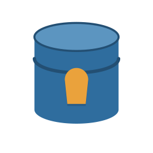

open_pg_tde: Transparent Data Encryption for PostgreSQL
Documentation
2.3.0
open_pg_tde documentation¶
open_pg_tde is an open source PostgreSQL extension that provides Transparent Data Encryption (TDE) to protect data at rest. It ensures that the data stored on disk is encrypted, and that no one can read it without the proper encryption keys, even if they gain access to the physical storage media.
open_pg_tde is an open fork of Percona’s pg_tde, maintained by Command Prompt, Inc. It runs on upstream PostgreSQL 16 and later: you apply the open_pg_tde core patch to a PostgreSQL source tree, build it with the hooks enabled, and build the extension against that install. See Install from source.
Installation guide¶
Get started quickly with the step-by-step installation instructions.
 Features¶
Features¶
Explore what features the open_pg_tde extension brings to PostgreSQL.
Architecture¶
Understand how open_pg_tde integrates into PostgreSQL. Learn how keys are managed, how encryption is applied, and how the design ensures performance and security.
 What’s new?¶
What’s new?¶
Learn about the releases and changes in open_pg_tde.
Get help¶
The documentation covers most of what you need to know about open_pg_tde, but
it cannot cover every scenario. When you get stuck, reach out.
Questions and discussion¶
For questions, ideas, and general discussion, use GitHub Discussions.
Bugs and feature requests¶
To report a bug or request a feature, open an issue in GitHub Issues. Before you file, search the existing issues in case it is already reported. When reporting a bug, include the PostgreSQL major version and steps to reproduce. See the contributing guide for details.
Security issues¶
Do not report security vulnerabilities in public issues. See SECURITY.md for how to report them privately.
About the project¶
open_pg_tde is an open fork of pg_tde, maintained by
Command Prompt, Inc.
Features¶
open_pg_tde runs on upstream PostgreSQL 16 and later, patched with the open_pg_tde core patch. The patch provides the extended Storage Manager and WAL APIs that the extension uses to encrypt data at rest. See Install from source.
The following features are available for the extension:
- Table encryption, including:
- Data tables
- Index data for encrypted tables
- TOAST tables
- Temporary tables
Note
Metadata of those tables is not encrypted.
- Single-tenancy support via a global keyring provider
- Multi-tenancy support
- Table-level granularity for encryption and access control
- Multiple Key management options
Next steps¶
Learn more about how open_pg_tde implements Transparent Data Encryption:
Concepts
About Transparent Data Encryption¶
Transparent Data Encryption (TDE) protects your data at rest by ensuring that even if the underlying storage is compromised, the data remains unreadable without the correct decryption keys. This is especially critical for environments handling sensitive, regulated, or high-value information.
This process runs transparently in the background, with minimal impact on database operations.
Use the links below to explore how open_pg_tde helps secure your PostgreSQL deployments:
Discover the benefits of open_pg_tde Understand open_pg_tde limitations View the full feature list Get started with installation
Benefits of open_pg_tde¶
The benefits of using open_pg_tde are outlined below for different users and organizations.
Benefits for organizations¶
- Data safety: Prevents unauthorized access to stored data, even if backup files or storage devices are stolen or leaked.
- Enterprise-ready Architecture: Supports both single and multi-tenancy, giving flexibility for SaaS providers or internal multi-user systems.
Benefits for DBAs and engineers¶
- Granular control: Encrypt specific tables or databases instead of the entire system, reducing performance overhead.
- Operational simplicity: Works transparently without requiring major application changes.
- Defense in depth: Adds another layer of protection to existing controls like TLS (encryption in transit), access control, and role-based permissions.
When combined with an external Key Management System (KMS), open_pg_tde enables centralized control, auditing, and rotation of encryption keys, which is important for production environments.
See also
For more background on Transparent Data Encryption (TDE), see About Transparent Data Encryption.
How open_pg_tde works¶
To encrypt the data, two types of keys are used:
- Internal encryption keys to encrypt user data. They are stored internally, near the data that they encrypt.
- The principal key to encrypt database keys. It is kept separately from the database keys and is managed externally in the key management store.
Note
For more information on managing and storing principal keys externally, including supported key management systems and the local keyring option, see Key management overview.
The encryption process works as follows:
{kind=link}
When a user creates an encrypted table using open_pg_tde, a new random internal key is generated for that table. This key is used to encrypt all data the user inserts in that table, using the AES-XTS cipher by default. Eventually the encrypted data gets stored in the underlying storage.
The internal key itself is wrapped (encrypted) by the principal key using AES-256-GCM. The principal key is stored externally in the key management store.
Similarly when the user queries the encrypted table, the principal key is retrieved from the key store to decrypt the internal key. Then the same unique internal key for that table is used to decrypt the data, and unencrypted data gets returned to the user. So, effectively, every TDE table has a unique key, and each table key is encrypted using the principal key.
Impact of open_pg_tde on database operations¶
This page summarizes how open_pg_tde interacts with core PostgreSQL operations.
| Area | Affected | Notes / Actions |
|---|---|---|
| Backups | Yes | Encrypted backups require open_pg_tde-aware tools. See Backup with WAL encryption. |
| Restore | Yes | Restored data remains encrypted; open_pg_tde transparently handles decryption. See Restore encrypted backups. |
| Streaming replication | Partial | Replicas must load the open_pg_tde shared library (shared_preload_libraries = ‘open_pg_tde’). Without it, the replica will fail on operations involving tde_heap. |
| Logical replication | No | Not affected. |
| Monitoring and statistics | No | Not affected, including pg_stat_statements. |
| Performance | Partial | Minor CPU overhead due to enabling encryption, most noticeable on random write workloads. |
Encrypted data scope¶
open_pg_tde encrypts the following components:
- User data in tables using the extension, including associated TOAST data. The table metadata (column names, data types, etc.) is not encrypted.
- Temporary tables created during the query execution, for data tables created using the extension.
- Write-Ahead Log (WAL) data for the entire database cluster. This includes WAL data in encrypted and non-encrypted tables.
- Indexes on encrypted tables.
For what encryption at rest does and does not protect against, see the threat model.
Table Access Methods and open_pg_tde¶
A table access method is the way how PostgreSQL stores the data in a table. The default table access method is heap. PostgreSQL organizes data in a heap structure, meaning there is no particular order to the rows in the table. Each row is stored independently and identified by its unique row identifier (TID).
How the heap access method works¶
Insertion: When a new row is inserted, PostgreSQL finds a free space in the tablespace and stores the row there.
Deletion: When a row is deleted, PostgreSQL marks the space occupied by the row as free, but the data remains until it is overwritten by a new insertion.
Updates: PostgreSQL handles updates by deleting the old row and inserting a new row with the updated values.
Custom access method¶
Custom access methods allow you to implement and define your own way of organizing data in PostgreSQL. This is useful if the default table access method doesn’t meet your needs.
Custom access methods are typically available with PostgreSQL extensions. When you install an extension and enable it in PostgreSQL, a custom access method is created.
An example of such an approach is the tde_heap access method. It is automatically created only for the databases where you enabled the open_pg_tde extension and configured the key provider, enabling you to encrypt the data.
To use a custom access method, specify the USING clause for the CREATE TABLE command:
CREATE TABLE table_name (
column1 data_type,
column2 data_type,
...
) USING tde_heap;
How tde_heap works with open_pg_tde¶
The tde_heap access method works on top of the default heap access method and is a marker to point which tables require encryption. It uses the custom storage manager TDE SMGR, which becomes active only after you installed the open_pg_tde extension.
Every data modification operation is first sent to the Buffer Manager, which updates the buffer cache. Then, it is passed to the storage manager, which then writes it to disk. When a table requires encryption, the data is sent to the TDE storage manager, where it is encrypted before written to disk.
Similarly, when a client queries the database, the PostgreSQL core sends the request to the Buffer Manager which checks if the requested data is already in the buffer cache. If it’s not there, the Buffer Manager requests the data from the storage manager. The TDE storage manager reads the encrypted data from disk, decrypts it and loads it to the buffer cache. The Buffer Manager sends the requested data to the PostgreSQL core and then to the client.
Thus, the encryption is done at the storage manager level.
Changing the default table access method¶
You can change the default table access method so that every table in the entire database cluster is created using the custom access method. For example, you can enable data encryption by default by defining the tde_heap as the default table access method.
However, consider the following before making this change:
- This is a global setting and applies across the entire database cluster and not just a single database.
We recommend setting it with caution because all tables and materialized views created without an explicit access method in their
CREATEstatement will default to the specified table access method. - You must create the
open_pg_tdeextension and configure the key provider for all databases before you modify the configuration. Otherwise PostgreSQL won’t find the specified access method and will throw an error.
Here is how you can set the new default table access method:
-
Add the access method to the
default_table_access_methodparameter:Use
ALTER SYSTEM, it requires superuser orALTER SYSTEMprivileges.ALTER SYSTEM SET default_table_access_method = tde_heap;Edit the
postgresql.confconfiguration file and add the value for thedefault_table_access_methodparameter.default_table_access_method = 'tde_heap'You can use the SET command to change the default table access method temporarily, for the current session.
Unlike modifying the
postgresql.conffile or using theALTER SYSTEMcommand, the changes you make via theSETcommand don’t persist after the session ends.You also don’t need to have the superuser privileges to run the
SETcommand.You can run the SET command anytime during the session.
SET default_table_access_method = tde_heap; -
Reload the configuration to apply the changes:
SELECT pg_reload_conf();
Threat model¶
Transparent Data Encryption protects data at rest. Understanding what that
does and does not cover is important for deciding whether open_pg_tde fits
your requirements.
What open_pg_tde protects against¶
open_pg_tde protects the confidentiality of data written to disk. It defends
against an attacker who obtains the stored bytes but not a running server:
- Theft of storage media or a disk image. A stolen disk, SAN volume, or virtual machine image reveals only ciphertext for encrypted tables, their indexes and TOAST data, and (when WAL encryption is enabled) the WAL.
- Stolen or leaked file-level backups. A copy of the data directory, or a
physical backup taken with the
open_pg_tdetools, is ciphertext at rest. - Decommissioned or improperly wiped disks. Data left on retired hardware is not readable without the keys.
The encryption keys are not stored with the data. Each relation’s internal key is wrapped by a principal key held in a key management system or a key file that the operator controls (see key management). An attacker with the data files but not the principal key cannot decrypt them. For temporary files the key is generated per boot and held only in memory, so temporary data on a stolen disk cannot be recovered at all.
What open_pg_tde does not protect against¶
TDE is not a substitute for access control, network security, or application level protection. It does not defend against an adversary who can act on a running server:
- Data in memory. Shared buffers hold decrypted pages; this is the
“transparent” part of TDE. An attacker who can read server memory, or who has
a live database connection with sufficient privileges, sees plaintext.
open_pg_tdewipes plaintext key material from its own transient buffers after use and holds the principal key cache in locked (non-swappable) memory, which narrows the window for key recovery from a core dump or the swap file but does not protect decrypted page data held in shared buffers. - A privileged user on a running server. A superuser, or anyone who can run queries against the data, reads decrypted data through normal SQL. TDE does not protect data from the database administrator.
- Catalog metadata. PostgreSQL system catalogs are not encrypted. Table and
column names, table structure, and other schema metadata are stored in the
clear. Optimizer statistics in
pg_statistic, which can include sampled values from encrypted columns, are also not encrypted. TDE protects the table data, not the metadata that describes it. Note that this does not expose the encryption keys: the keys live in theopen_pg_tdekey files wrapped by the principal key, not in the catalog, so reading or altering catalog entries does not reveal key material. - Tampering (integrity). The data-file cipher (XTS) provides
confidentiality, not authentication.
open_pg_tdedoes not currently detect deliberate modification of ciphertext on disk. Authenticated page encryption is a separate, larger initiative; see the design note on authenticated pages. - Unlogged table forks. An unlogged table keeps an init fork that PostgreSQL copies over the main fork to reset the table after a crash. That reset is a raw file copy of encrypted bytes performed by the server outside the storage hooks, so the init fork and the main fork must share the same XTS tweak at each block position for the copy to decrypt afterward. As a result, an attacker with the data files can tell which main-fork blocks are byte-identical to the init-fork template. This is limited to unlogged tables, reveals only block equality and not the contents of either fork, and does not affect regular (logged) tables.
- Column-level protection from the server. All encryption is at the storage
layer, so the server necessarily decrypts data to operate on it.
open_pg_tdedoes not provide client-side or column-level encryption that would hide values from the server itself.
Operational requirements¶
- Use an external key management system. Rooting the principal key in a KMS or a key file kept separate from the data is what makes the encryption meaningful. Storing the key alongside the data undermines it.
- Enable data checksums.
open_pg_tdeencrypts a whole page as one unit, so a hint-bit update re-encrypts the page. Initialize the cluster withinitdb --data-checksums(or setwal_log_hints = on) so hint-bit changes are WAL-logged and torn writes are recoverable. PostgreSQL 18 enables data checksums by default. If neither data checksums norwal_log_hintsis enabled,open_pg_tdewarns at server start. See Configure open_pg_tde. - Use a FIPS build of OpenSSL where required. All of open_pg_tde’s algorithms are FIPS-approved, and it can enforce that OpenSSL is in FIPS mode. See FIPS compliance.
Summary¶
| Concern | Protected by open_pg_tde |
|---|---|
| Stolen disk, media, or VM image | Yes |
| Stolen file-level backup | Yes |
| Decommissioned disks | Yes |
| Data in server memory | No |
| Privileged user on a running server | No |
| Catalog metadata and statistics | No |
| Tamper detection (integrity) | No |
| Block equality between an unlogged table’s init and main forks | No |
| Encryption key exposure via the catalog | Not applicable (keys are not in the catalog) |
FIPS compliance¶
FIPS 140-2 and 140-3 are US government standards for cryptographic modules.
This page describes how open_pg_tde relates to them: which algorithms it uses,
how to run it so that all cryptography is FIPS-validated, and the distinction
between using a validated module and being one.
Compliance model¶
open_pg_tde does not implement its own cryptography. Every cryptographic
operation, for table data, indexes, WAL, temporary files, key wrapping, and
random number generation, is performed through OpenSSL’s EVP interface. When
OpenSSL is configured to use its FIPS-validated provider, open_pg_tde’s
cryptography runs on validated implementations.
This is the standard way software achieves FIPS compliance: it relies on a
validated cryptographic module (OpenSSL’s FIPS provider) rather than certifying
its own. open_pg_tde is therefore FIPS-compliant when run against a
FIPS-validated OpenSSL. It is not itself a separately validated FIPS 140
module; the validated module boundary is OpenSSL, not the extension. Deployments
that must cite a validation certificate cite the OpenSSL FIPS provider’s
certificate.
Approved algorithms¶
Every algorithm open_pg_tde uses is FIPS-approved:
| Purpose | Algorithm | Standard |
|---|---|---|
| Table and index data files | AES-128-XTS, AES-256-XTS | NIST SP 800-38E |
| WAL | AES-CTR (128 or 256) | NIST SP 800-38A |
| Temporary files | AES-128-XTS, with AES-128-CTR for sub-block tails | NIST SP 800-38E, 800-38A |
| Internal key wrapping | AES-256-GCM | NIST SP 800-38D |
| Random keys and IVs | OpenSSL DRBG | NIST SP 800-90A |
XTS-AES requires its two subkeys to be independent (NIST SP 800-38E). OpenSSL
enforces this by rejecting an XTS key whose halves are equal. open_pg_tde
generates independent subkeys for every XTS key, including the 64-byte key for
AES-256-XTS. Each XTS data unit is a single page (at most 512 AES blocks), well
within the SP 800-38E limit on data unit size.
Running in FIPS mode¶
-
Configure OpenSSL to use its FIPS provider. This is done in the operating system’s OpenSSL configuration and is independent of PostgreSQL. Follow the OpenSSL FIPS documentation for your distribution.
open_pg_tderequires OpenSSL 3.0 or later for FIPS operation. -
Set
open_pg_tde.require_fips = oninpostgresql.confand restart. On start,open_pg_tdeverifies that the OpenSSL FIPS provider is active. If it is not, the server stops with a fatal error rather than run on non-validated cryptography:
FATAL: open_pg_tde.require_fips is set but OpenSSL is not in FIPS mode
require_fips does not put OpenSSL into FIPS mode; it enforces that OpenSSL
is already configured for it. Leaving it off does not disable encryption; it
only removes the startup check.
Scope and caveats¶
- FIPS addresses the cryptographic algorithms and their implementation. It does not change what encryption at rest protects. See the threat model for that scope, including that catalog metadata is not encrypted.
- FIPS compliance depends on the OpenSSL build in use. Verify that the OpenSSL linked by your PostgreSQL packages provides a validated FIPS provider.
open_pg_tdeselects algorithms and modes; it does not weaken them. There is no configuration that selects a non-approved algorithm.
Limitations of open_pg_tde¶
Known incompatibilities on a patched PostgreSQL¶
Some PostgreSQL extensions may not work on a PostgreSQL build patched with the open_pg_tde core patch, because of the storage-manager changes the patch introduces.
These incompatibilities can occur even when the hooks are enabled but open_pg_tde is not installed. A build with the hooks compiled out behaves as unmodified PostgreSQL.
Distributed and extension-based systems¶
Citus and TimescaleDB are not supported
A patched PostgreSQL build with the hooks enabled is not compatible with distributed PostgreSQL extensions such as Citus or time-series extensions such as TimescaleDB.
This limitation is caused by the storage-manager changes the core patch introduces, and does not depend on enabling open_pg_tde.
Limitations when using open_pg_tde¶
Limitations of open_pg_tde 2.3.0:
- PostgreSQL’s internal system catalogs are not encrypted. Table and column names, table structure, and other schema metadata are stored in the clear, as are optimizer statistics in
pg_statistic, which can include sampled values from encrypted columns. This does not expose encryption keys: the keys are held in theopen_pg_tdekey files wrapped by the principal key, not in the catalog. See the threat model for the full scope. - Temporary files created when queries exceed
work_memare not encrypted by default. Enableencrypt_temp_filesto encrypt them. With it off, these files may persist during long-running queries or after a server crash, which can expose sensitive data in plaintext on disk.
Recovery without open_pg_tde in shared_preload_libraries¶
Risk of corruption when recovering encrypted clusters without open_pg_tde loaded
When recovering a PostgreSQL cluster that contains encrypted tables, the open_pg_tde extension must be loaded through the shared_preload_libraries configuration parameter.
pg_rewind and open_pg_tde_rewind¶
Risk of corruption when using pg_rewind or open_pg_tde_rewind with TDE
When TDE is enabled, using pg_rewind or open_pg_tde_rewind between diverged PostgreSQL nodes may corrupt encrypted relations.
This happens because pg_rewind and open_pg_tde_rewind copy relation files between the data directories of two clusters. In some cases, only parts of files are replaced, leaving data encrypted with the internal encryption keys of the source cluster. This data cannot be decrypted by the destination cluster.
For more information about how open_pg_tde manages internal encryption keys, see How open_pg_tde works and Encryption of data files.
This behavior is inherited from pg_rewind and is currently a known issue in open_pg_tde_rewind.
As a result, open_pg_tde may be unable to decrypt the copied data, causing queries to fail with errors such as:
ERROR: 16 invalid pages among blocks 15..30 of relation "base/16384/16438"
ALTER DATABASE ... SET TABLESPACE¶
Changing a database tablespace has limited support with open_pg_tde
The ALTER DATABASE ... SET TABLESPACE command bypasses PostgreSQL’s storage manager (SMGR), which open_pg_tde relies on to enforce encryption.
- If encrypted objects exist in the database’s default tablespace, the operation is refused.
- If no encrypted objects are present in the default tablespace, the operation is allowed.
Only objects in the default tablespace are checked. Objects in other tablespaces are not evaluated by open_pg_tde.
To move encrypted tables individually, use ALTER TABLE ... SET TABLESPACE, which operates through SMGR and is compatible with open_pg_tde.
Currently unsupported WAL tools¶
The following tools are currently unsupported with open_pg_tde WAL encryption:
pg_createsubscriberpg_receivewalBarmanpg_verifybackupby default fails with checksum or WAL key size mismatch errors. As a workaround, use-s(skip checksum) and-n(--no-parse-wal) to verify backups.- The asynchronous archiving feature of pgBackRest.
Supported WAL tools¶
The following tools have been tested to work with open_pg_tde WAL encryption:
- Patroni, for an example configuration see the following Patroni configuration file
open_pg_tde_basebackup(with--wal-method=streamor--wal-method=none), for details on usingopen_pg_tde_basebackupwith WAL encryption, see Backup with WAL encryption enabledopen_pg_tde_resetwalopen_pg_tde_rewindopen_pg_tde_upgradeopen_pg_tde_waldump- pgBackRest (asynchronous archiving is NOT supported with encrypted WAL)
Example Patroni configuration¶
The following is an example configuration.
Click to expand the example Patroni configuration
# Example Patroni configuration file
# Source: https://github.com/jobinau/pgscripts/blob/main/patroni/patroni.yml
scope: tde
name: pg1
restapi:
listen: 0.0.0.0:8008
connect_address: pg1:8008
etcd3:
host: etcd1:2379
bootstrap:
dcs:
ttl: 30
loop_wait: 10
retry_timeout: 10
maximum_lag_on_failover: 1048576
postgresql:
use_pg_rewind: true
use_slots: true
parameters:
archive_command: "/lib/postgresql/17/bin/open_pg_tde_archive_decrypt %f %p \"pgbackrest --stanza=tde archive-push %%p\""
archive_timeout: 600s
archive_mode: "on"
logging_collector: "on"
restore_command: "/lib/postgresql/17/bin/open_pg_tde_restore_encrypt %f %p \"pgbackrest --stanza=tde archive-get %%f \\\"%%p\\\"\""
pg_hba:
- local all all peer
- host all all 0.0.0.0/0 scram-sha-256
- host all all ::/0 scram-sha-256
- local replication all peer
- host replication all 0.0.0.0/0 scram-sha-256
- host replication all ::/0 scram-sha-256
initdb:
- encoding: UTF8
- data-checksums
- set: shared_preload_libraries=open_pg_tde
post_init: /usr/local/bin/setup_cluster.sh
postgresql:
listen: 0.0.0.0:5432
connect_address: pg1:5432
data_dir: /var/lib/postgresql/patroni-17
bin_dir: /lib/postgresql/17/bin
bin_name:
pg_basebackup: open_pg_tde_basebackup
pg_rewind: open_pg_tde_rewind
pgpass: /var/lib/postgresql/patronipass
authentication:
replication:
username: replicator
password: rep-pass
superuser:
username: postgres
password: secretpassword
parameters:
unix_socket_directories: /tmp
# Use unix_socket_directories: /var/run/postgresql for Debian/Ubuntu distributions
watchdog:
mode: off
tags:
nofailover: false
noloadbalance: false
clonefrom: false
nosync: false
Warning
The above example is provided as a reference, but Patroni versions differ, especially with discovery backends such as etcd. Ensure you adjust the configuration to match your environment, version, and security requirements.
Next steps¶
Check which PostgreSQL versions and deployment types are compatible with open_pg_tde before planning your installation.
View the versions and supported deployments
Begin the installation process when you’re ready to set up encryption.
Comparison with Percona pg_tde¶
open_pg_tde is an open fork of Percona’s pg_tde, maintained by
Command Prompt, Inc. It keeps the core
Transparent Data Encryption design of the original project: a two-tier key
hierarchy, the tde_heap access method, per-table encryption, WAL encryption,
and pluggable key providers. This page describes how the two differ, so you can
choose the one that fits your deployment. For the current state of Percona
pg_tde, see the Percona pg_tde documentation.
The main difference: the PostgreSQL server¶
The two projects target different PostgreSQL builds.
-
open_pg_tde runs on upstream PostgreSQL. It does not require a vendor fork of the server. Encryption relies on storage-manager and WAL extensibility that upstream PostgreSQL does not yet expose, so you apply the
open_pg_tdecore patch to a stock PostgreSQL source tree and build the extension against it. The patch is gated behind a build flag (--enable-tde-hooks); with the flag off, the same tree builds as unmodified PostgreSQL. open_pg_tde supports PostgreSQL 16, 17, and 18. -
Percona pg_tde requires Percona Server for PostgreSQL. Percona’s documentation states that pg_tde is bundled as a component of Percona Server for PostgreSQL and requires its patches to function.
If you run community PostgreSQL and do not want to adopt a vendor server distribution, open_pg_tde is built for that case. If you already run Percona Server for PostgreSQL, Percona pg_tde is integrated with it.
Comparison¶
| Dimension | open_pg_tde | Percona pg_tde |
|---|---|---|
| Base server | Upstream PostgreSQL 16, 17, 18, with the gated open_pg_tde core patch | Percona Server for PostgreSQL |
| Maintainer | Command Prompt, Inc. | Percona |
| Relationship | Open fork of Percona pg_tde | Original project |
| Access method | tde_heap |
tde_heap |
| Encrypted at rest | Table data, indexes, TOAST, WAL, temporary files | Table data, indexes, TOAST, WAL |
| Key providers | KMIP-compatible KMS (including Fortanix, Thales, Akeyless), OpenBao, keyring file | KMIP, HashiCorp Vault, OpenBao, keyring file, and others |
Both projects continue to develop independently. Confirm current specifics in each project’s own documentation.
What open_pg_tde focuses on¶
Beyond running on upstream PostgreSQL, this fork has added:
- Temporary file encryption. Query-spill files (external sorts, hash joins)
are encrypted with AES-128-XTS. See
encrypt_temp_files. - AES-256-XTS data cipher, alongside AES-128-XTS, for deployments that
require AES-256 keys, through a pluggable cipher registry. See
open_pg_tde.data_cipher. - FIPS enforcement. All cryptography runs through OpenSSL and uses FIPS-approved modes, and the server can be required to start only when OpenSSL is in FIPS mode. See FIPS compliance.
- A documented threat model stating what encryption at rest does and does not protect. See the threat model.
Key management¶
open_pg_tde uses OpenBao, the Apache 2.0 licensed fork of HashiCorp Vault, through its Key/Value version 2 secrets engine, rather than HashiCorp Vault directly. It also supports KMIP-compatible key management systems and a local keyring file. See the key management overview.
Attribution¶
open_pg_tde is derived from Percona pg_tde, which is copyright Percona and released under the PostgreSQL License. open_pg_tde retains that copyright and license for the derived work. Command Prompt, Inc. maintains open_pg_tde and is not affiliated with Percona.
Get started
Install open_pg_tde¶
open_pg_tde runs on upstream PostgreSQL 16 and later. It does not require a
vendor fork of the server. Because encryption relies on storage-manager and WAL
extensibility that upstream PostgreSQL does not yet expose, you install
open_pg_tde by applying a gated core patch to a PostgreSQL source tree and
building it, then building the extension against that install.
Apply the open_pg_tde core patch to a stock PostgreSQL 16+ source tree,
build with the hooks enabled, and build the extension against it. This is the
supported path and works on any platform that can build PostgreSQL.
Prebuilt DEB and RPM packages of open_pg_tde together with a compatible
PostgreSQL build are planned. When available, they will be documented here.
Supported PostgreSQL versions¶
| PostgreSQL major | Status |
|---|---|
| 18 | Supported |
| 17 | Supported |
| 16 | Supported |
| 14 - 15 | Not supported |
The core patch is maintained as a per-major-version series, since the storage
manager interface changes between PostgreSQL majors. See
patches/postgresql/README.md in the source tree for the current status and the
maintenance process.
On a supported version, open_pg_tde provides the tde_heap access method and
encrypts tables, indexes, and WAL data.
Note
Support for the earlier tde_heap_basic access method has been removed.
Use tde_heap.
Next steps¶
After finishing the installation, you can proceed with:
Set up open_pg_tde Learn about key management Validate your encryption setup Enable WAL encryption
Install open_pg_tde on native PostgreSQL¶
open_pg_tde runs on upstream PostgreSQL 16 and later. It does not require a
vendor fork of the server. Encryption is implemented through two extensibility
points that upstream PostgreSQL does not yet expose: a pluggable storage
manager for data files and a WAL storage manager for the write-ahead log.
open_pg_tde provides these as a self-contained patch that you apply to a
PostgreSQL source tree before building.
The patch is gated behind a build flag, so a patched tree builds as unmodified PostgreSQL unless you enable the hooks.
Overview¶
- Apply the
open_pg_tdecore patch to a stock PostgreSQL source tree. - Build and install PostgreSQL with the hooks enabled (
--enable-tde-hooks). - Build and install the
open_pg_tdeextension against that install. - Enable the extension and configure a key provider.
Prerequisites¶
- A stock PostgreSQL 16+ source tree (a release tarball or a
REL_<major>_STABLEcheckout). - A C toolchain, plus the usual PostgreSQL build dependencies.
- OpenSSL development headers (
libssl-dev/openssl-devel). mesonandninja(to build the extension).
Step 1: Apply the core patch¶
The patches are organized by PostgreSQL major version under
patches/postgresql/<major>/ and applied with the bundled driver, which
auto-detects the tree’s version:
patches/postgresql/apply.sh /path/to/postgresql-src
To preview without modifying the tree, add --check; to undo, add --reverse.
Step 2: Build PostgreSQL with the hooks enabled¶
The hooks are compiled out by default. Enable them at configure time.
cd /path/to/postgresql-src
meson setup build -Dtde_hooks=enabled -Dprefix=/usr/local/pg-tde
ninja -C build install
cd /path/to/postgresql-src
./configure --enable-tde-hooks --prefix=/usr/local/pg-tde --with-openssl
make -j"$(nproc)"
make install
Note
If your configure script was not regenerated after patching (for example,
autoconf is unavailable), pass CPPFLAGS="-DUSE_TDE_HOOKS" to configure
instead of --enable-tde-hooks, or uncomment the USE_TDE_HOOKS define in
src/include/pg_config_manual.h.
To confirm a build has the hooks compiled in, the USE_TDE_HOOKS macro is
defined in pg_config.h. Without it, the binary behaves identically to
unpatched PostgreSQL.
Step 3: Build and install the extension¶
Build open_pg_tde against the pg_config from the install you just created:
meson setup build-ext -Dpg_config=/usr/local/pg-tde/bin/pg_config
ninja -C build-ext install
Step 4: Enable the extension¶
Add open_pg_tde to shared_preload_libraries and restart the server:
ALTER SYSTEM SET shared_preload_libraries = 'open_pg_tde';
pg_ctl -D /path/to/datadir restart
Then create the extension:
CREATE EXTENSION open_pg_tde;
Note
The open_pg_tde frontend tools (open_pg_tde_basebackup,
open_pg_tde_rewind, and so on) link against the server’s shared libraries.
If they are installed outside your default linker path, set
LD_LIBRARY_PATH=/usr/local/pg-tde/lib when running them.
Verifying the build¶
To prove the gate works both ways on a patched tree (hooks off builds clean PostgreSQL; hooks on encrypts), run the bundled verification script:
patches/postgresql/verify-gate.sh /path/to/postgresql-src /usr/local/pg-tde \
--ext-build build-ext
Next steps¶
Set up open_pg_tde Learn about key management Validate your encryption setup Enable WAL encryption
Configure open_pg_tde¶
Before you can use open_pg_tde for data encryption, you must enable the extension and configure PostgreSQL to load it at startup. This setup ensures that the necessary hooks and shared memory are available for encryption operations.
Note
To learn how to configure multi-tenancy, refer to the Configure multi-tenancy guidelines.
The open_pg_tde extension requires additional shared memory. You need to configure PostgreSQL to preload it at startup.
1. Configure shared_preload_libraries¶
You can configure the shared_preload_libraries parameter in two ways:
-
Add the following line to the
postgresql.conffile:shared_preload_libraries = 'open_pg_tde' -
Use the ALTER SYSTEM command. Run the following command in
psqlas a superuser:ALTER SYSTEM SET shared_preload_libraries = 'open_pg_tde';
2. Restart the PostgreSQL cluster¶
Restart the postgresql cluster to apply the configuration.
-
On Debian and Ubuntu:
sudo systemctl restart postgresql.service -
On RHEL and derivatives:
sudo systemctl restart postgresql-17
3. Create the extension¶
After restarting PostgreSQL, connect to psql as a superuser or database owner and run:
CREATE EXTENSION open_pg_tde;
See CREATE EXTENSION for more details.
Note
The open_pg_tde extension is created only for the current database. To enable it for other databases, you must run the command in each individual database.
4. (Optional) Enable open_pg_tde by default¶
To automatically have open_pg_tde enabled for all new databases, modify the template1 database:
psql -d template1 -c 'CREATE EXTENSION open_pg_tde;'
Note
It’s recommended to use an external key provider (KMS) to manage encryption keys. For configuration instructions, see Next steps.
Recommended: enable data checksums¶
open_pg_tde encrypts a whole 8 kB page as one unit. When a hint bit is updated
on a page, the entire page is re-encrypted. PostgreSQL does not, by default,
write-ahead log a hint-bit-only change, so under whole-page encryption a torn
write of such a page during a crash could damage the page.
Enable data checksums so PostgreSQL WAL-logs hint-bit changes and full-page images protect against torn pages. Initialize the cluster with checksums:
initdb --data-checksums -D /path/to/datadir
If the cluster was not initialized with checksums, set wal_log_hints = on
instead. Data checksums also verify page integrity on read; the checksum is
computed on the plaintext page and then the page is encrypted, so verification
runs on the decrypted page and works normally with open_pg_tde.
PostgreSQL 18 enables data checksums by default, so a default PostgreSQL 18
cluster is already safe. On earlier versions checksums are off unless you enable
them. If neither data checksums nor wal_log_hints is enabled, open_pg_tde
emits a warning at server start:
WARNING: open_pg_tde is loaded but neither data checksums nor wal_log_hints is enabled
Next steps¶
Key management
Key management overview¶
In production environments, storing encryption keys locally on the PostgreSQL server can introduce security risks. To enhance security, open_pg_tde supports integration with external Key Management Systems (KMS) through a Global Key Provider interface.
This section describes how you can configure open_pg_tde to use the local and external key providers.
To use an external KMS with open_pg_tde:
- Configure a Key Provider
- Set the Global Principal Key
Note
While key files may be acceptable for local or testing environments, KMS integration is the recommended approach for production deployments.
Warning
Do not rotate encryption keys while a backup is running. This may result in an inconsistent backup and restore failure. This applies to all backup tools.
Schedule key rotations outside backup windows. After rotating keys, take a new full backup.
For more details, see Limitations of open_pg_tde.
open_pg_tde has been tested with the following key providers:
| KMS Provider | Description | Documentation |
|---|---|---|
| KMIP | Standard Key Management Interoperability Protocol. | Configure KMIP → |
| Fortanix | Fortanix DSM key management. | KMIP-compatible servers → |
| Thales | Thales CipherTrust Manager and DSM. | KMIP-compatible servers → |
| Akeyless | A cloud-based secrets management platform for securely storing and accessing credentials and encryption keys. | KMIP-compatible servers → |
| OpenBao | Apache 2.0 licensed Vault fork using the KV v2 secrets engine. | Configure OpenBao → |
| Keyring file (not recommended) | Local key file for dev/test only. | Configure keyring file → |
KMIP configuration¶
To use a Key Management Interoperability Protocol (KMIP) server with open_pg_tde, you must configure it as a global key provider. This setup enables open_pg_tde to securely fetch and manage encryption keys from a centralized key management appliance.
Note
You need the root certificate of the KMIP server and a client key/certificate pair with permissions to create and read keys on the server.
For testing purposes, you can use an Eviden KMS server, which enables easy certificate generation and basic KMIP behavior. If you’re using a production-grade KMIP server, ensure you obtain valid, trusted certificates from the key management appliance.
Example usage¶
SELECT open_pg_tde_add_global_key_provider_kmip(
'provider-name',
'kmip-IP',
port,
'/path_to/client_cert.pem',
'/path_to/client_key.pem',
'/path_to/ca_cert.pem'
);
Parameter descriptions¶
provider-nameis the name of the provider. You can specify any name, it’s for you to identify the providerkmip-IPis the IP address of a domain name of the KMIP serverportis the port to communicate with the KMIP server. Typically used port is 5696kmip_cert_pathis the path to the client certificate.kmip_key_pathis the path to the client private key.kmip_ca_pathis the path to the CA certificate used to verify the KMIP server.
Certificate verification¶
open_pg_tde verifies the KMIP server’s TLS certificate on every connection. The server certificate must be signed by the CA supplied in kmip_ca_path, and the certificate identity must match the kmip-IP value (an IP address SAN when you connect by IP, or a DNS name SAN when you connect by host name). The connection also requires TLS 1.2 or newer. A connection to a server that presents an untrusted, expired, or mismatched certificate is refused, which prevents a network attacker from impersonating the KMIP server and capturing principal keys. Make sure kmip_ca_path points to the CA that issued the server certificate and that the certificate includes the host or address you connect to.
The following example is for testing purposes only.
SELECT open_pg_tde_add_global_key_provider_kmip(
'kmip','127.0.0.1',
5696,
'/tmp/client_cert_jane_doe.pem',
'/tmp/client_key_jane_doe.pem',
'/tmp/ca_certificate.pem'
);
For more information on related functions, see the link below:
open_pg_tde Function Reference
Next steps¶
KMIP-compatible servers¶
open_pg_tde connects to any key management appliance that implements the Key Management Interoperability Protocol (KMIP). The following vendors have been validated with open_pg_tde. Each connects over KMIP, so you configure it the same way regardless of vendor.
| Vendor | Product | Protocol | Vendor documentation |
|---|---|---|---|
| Fortanix | Data Security Manager (DSM) | KMIP | Fortanix documentation |
| Thales | CipherTrust Manager | KMIP | Thales documentation |
| Akeyless | Akeyless Platform | KMIP | Akeyless documentation |
To configure any of these servers as a global key provider, see the KMIP configuration page.
Next steps¶
Using OpenBao as a key provider¶
You can configure open_pg_tde to use OpenBao as a global key provider for managing encryption keys. OpenBao is an Apache 2.0 licensed fork of HashiCorp Vault and uses the Key/Value version 2 (KV v2) secrets engine.
Note
This guide assumes that your OpenBao server is already set up and accessible. OpenBao configuration is outside the scope of this document. See the OpenBao documentation for more information.
Example usage¶
To register an OpenBao server as a global key provider:
SELECT open_pg_tde_add_global_key_provider_openbao(
'provider-name',
'url',
'mount',
'secret_token_path',
'ca_path',
'namespace'
);
Parameter descriptions¶
provider-nameis the name that identifies this key provider.urlis the URL of the OpenBao server.mountis the mount point where the keyring stores the keys.secret_token_pathis the path to a file that contains an access token with read and write access to the mount point.ca_pathis the path of the CA file used for TLS verification. This parameter is optional.namespaceis the namespace on the OpenBao server. This parameter is optional. See namespace support in OpenBao. You can set a namespace without aca_pathby passingNULLas theca_pathvalue.
The following example is for testing only. Use secure tokens and TLS validation in production:
SELECT open_pg_tde_add_global_key_provider_openbao(
'my-openbao-provider',
'https://openbao.example.com:8200',
'secret/data',
'/path/to/token_file',
'/path/to/ca_cert.pem'
);
For the related functions, see the open_pg_tde function reference.
Next steps¶
Keyring file configuration¶
This setup is intended for development and stores the keys, unencrypted, in a data file you specify.
Note
While keyring files may be acceptable for local or testing environments, proper KMS providers are the recommended approach for production deployments.
You can configure key providers either at the database level (for development and testing) or at the global level (for production).
The steps below provide an example on how to add a database-scoped key provider:
-
Create a database-scoped file key provider (
file-keyringin this example) in the/tmp/open_pg_tde_test_local_keyring.perfile:SELECT open_pg_tde_add_database_key_provider_file( 'file-keyring', '/tmp/open_pg_tde_test_local_keyring.per' ); -
Create a key (
my_default_keyin this example) inside the newly createdfile-keyringprovider:SELECT open_pg_tde_create_key_using_database_key_provider( 'my_default_key', 'file-keyring' ); -
Set the key (
my_default_key) from the key provider (file-keyring):SELECT open_pg_tde_set_key_using_database_key_provider( 'my_default_key', 'file-keyring' );Tip
You can check the default key information (such as the date and time of creation). Run:
SELECT open_pg_tde_default_key_info(); -
Now, create a table using tde_heap:
CREATE TABLE customer_table (a INT) USING tde_heap;The newly created table is encrypted with the default key you have set (
my_default_key).Tip
To check if your created table is encrypted with tde_heap, run:
\d+ customer_tableIf
Access method: tde_heap, then your table is encrypted.Example output
postgres=# \d+ customer_table Table "public.customer_table" Column | Type | Collation | Nullable | Default | Storage | Compression | Stats target | Description --------+---------+-----------+----------+---------+---------+-------------+--------------+------------- a | integer | | | | plain | | | Access method: tde_heap
Further reading¶
Next, for production deployments, configure a global principal key using a proper KMS provider.
Alternatively, you can skip directly to validating encryption with open_pg_tde or configuring WAL encryption.
You can also review the available open_pg_tde functions in Functions.
Default Principal Key configuration¶
You can configure a default principal key for the server using a global key provider. This key is used by all databases that do not have their own encryption keys configured.
Configuring the default principal key is a multi-step process that uses the following functions:
- open_pg_tde_add_global_key_provider_
() adds a global key provider - open_pg_tde_create_key_using_global_key_provider() creates a principal key at a global key provider
- open_pg_tde_set_default_key_using_global_key_provider() sets the default principal key and rotates the internal encryption key if one is already configured
Add a global key provider¶
To add a global key provider, see the Key provider management topic.
Create a default principal key¶
Note
The sample output below is for demonstration purposes only. Be sure to replace the key name and provider with your actual values.
To create a global principal key, run:
SELECT open_pg_tde_create_key_using_global_key_provider(
'key-name',
'global_kmip_provider'
);
Sample output
postgres=# SELECT open_pg_tde_create_key_using_global_key_provider(
'keytest1',
'global_kmip_provider'
);
open_pg_tde_create_key_using_global_key_provider
---------------------------------------------
(1 row)
Set a default principal key¶
To set a default principal key, run:
SELECT open_pg_tde_set_default_key_using_global_key_provider(
'key-name',
'global_kmip_provider'
);
Sample output
postgres=# SELECT open_pg_tde_set_default_key_using_global_key_provider(
'keytest1',
'global_kmip_provider'
);
open_pg_tde_set_default_key_using_global_key_provider
--------------------------------------------------
(1 row)
Parameter description¶
key-nameis the name under which the principal key is stored in the provider.global_kmip_provideris the name of the global key provider you previously configured.
Note
If no error is reported, the action completed successfully.
How key generation works¶
The key material (actual cryptographic key) is auto-generated by open_pg_tde and stored securely by the configured provider.
Note
This process sets the default principal key for the entire server. Any database without a key explicitly configured will fall back to this key.
Next steps¶
To confirm that encryption is working as expected, follow the validation steps:
Validate Encryption with open_pg_tde¶
After enabling the open_pg_tde extension for a database, you can begin encrypting data using the tde_heap table access method.
Encrypt data in a new table¶
-
Create a table in the database for which you have enabled
open_pg_tdeusing thetde_heapaccess method as follows:CREATE TABLE <table_name> (<field> <datatype>) USING tde_heap;Warning: Example for testing purposes only:
CREATE TABLE albums ( album_id INTEGER GENERATED ALWAYS AS IDENTITY PRIMARY KEY, artist_id INTEGER, title TEXT NOT NULL, released DATE NOT NULL ) USING tde_heap;Learn more about table access methods and how you can enable data encryption by default in the Table Access Methods and TDE section.
-
To check if the data is encrypted, run the following function:
SELECT open_pg_tde_is_encrypted('table_name');The function returns
trueorfalse. -
(Optional) Rotate the principal key.
To re-encrypt the data using a new key, see Principal key management.
Encrypt existing table¶
You can encrypt an existing table. It requires rewriting the table, so for large tables, it might take a considerable amount of time.
Run the following command:
ALTER TABLE table_name SET ACCESS METHOD tde_heap;
Important
Using SET ACCESS METHOD drops hint bits which can impact query performance. To restore performance, run:
SELECT count(*) FROM table_name;
This forces PostgreSQL to check every tuple for visibility and reset the hint bits.
Hint
Want to remove encryption later? See how to decrypt your data.
Next steps¶
Configure WAL encryption¶
WAL encryption requires a principal key. You can satisfy this requirement in one of the following ways:
Option 1: Use the default principal key¶
If a default principal key is already configured for the server, WAL encryption uses it automatically. No additional server key configuration is required.
If you have not yet configured a default principal key, see Default Principal Key configuration.
Option 2: Configure a dedicated server principal key for WAL¶
Note
For a comprehensive list of supported open_pg_tde WAL encryption tools see Limitations of open_pg_tde.
-
Create the
open_pg_tdeextension if it does not exist:CREATE EXTENSION IF NOT EXISTS open_pg_tde; -
Configure a global key provider
Before creating the server (principal) key for WAL encryption, you must first configure a global key provider. See Key management overview for detailed instructions on configuring supported key providers.
-
Create the server (principal) key using the global key provider
The server key (also referred to as the principal key) is the key used by PostgreSQL to encrypt WAL data. See open_pg_tde_create_key_using_global_key_provider for more detailed instructions.
-
Set the server (principal) key
This step sets the previously created server (principal) key as the active key used by PostgreSQL for WAL encryption. See open_pg_tde_set_server_key_using_global_key_provider for more detailed instructions.
-
Enable WAL encryption using the
ALTER SYSTEMcommand. You need the privileges of the superuser to run this command:ALTER SYSTEM SET open_pg_tde.wal_encrypt = on; -
Restart the server to apply the changes.
- On Debian and Ubuntu:
sudo systemctl restart postgresql- On RHEL and derivatives
sudo systemctl restart postgresql-<version> -
(Optional) Verify that WAL encryption is enabled:
SHOW open_pg_tde.wal_encrypt;
Now WAL files start to be encrypted for both encrypted and unencrypted tables.
For more technical references related to architecture, variables or functions, see: Architecture overview
Technical reference
Architecture
Architecture overview¶
open_pg_tde is a customizable data-at-rest encryption extension, delivered as a PostgreSQL extension.
Note
open_pg_tde relies on extensibility changes in the PostgreSQL core. You add these by applying the open_pg_tde core patch to upstream PostgreSQL 16 or later and building it with the hooks enabled. See Install from source.
The following sections break down the key architectural components of this design.
a. Customizable means that open_pg_tde supports many different use cases:
- Encrypting all tables in all databases, or only selected ones
- Storing encryption keys in different external key storage servers, for a list of these see Key management overview
- Using a single key for a clusters, or different keys for different clusters
- Centralizing all keys in one provider, or splitting them across providers
- Controlling permissions: who manages keys and who can create encrypted or unencrypted tables
b. Complete means that open_pg_tde aims to encrypt data at rest.
c. Data at rest means everything written to the disk. This includes the following:
- Table data files
- Indexes
- Sequences
- Temporary tables
- Write Ahead Log (WAL)
Main components¶
The main components of open_pg_tde are:
-
Core server changes focus on making the server more extensible, allowing the main logic of
open_pg_tdeto remain separate, as an extension. Core changes also add encryption-awareness to some command line tools that have to work directly with encrypted tables or encrypted WAL files.These changes are shipped as a gated patch that you apply to upstream PostgreSQL. See the patch series and its per-version status in
patches/postgresql/and the install from source guide. -
The
open_pg_tdeextension implements the encryption code by hooking into the extension points introduced in the core changes, and the already existing extension points in the PostgreSQL server.Everything is controllable with GUC variables and SQL statements, similar to other extensions.
-
The keyring API and libraries implement the key storage logic with different key providers. The API is internal only, the keyring the libraries are currently part of the main codebase but could be separated into shared libraries in the future.
Encryption architecture¶
This section explains how open_pg_tde implements encryption inside PostgreSQL. It covers the key hierarchy, supported encryption algorithms, encryption workflow, and the core changes that make it possible to encrypt tables, WAL, and other database files.
Together, these components form the foundation of data-at-rest encryption in open_pg_tde.
Two-key hierarchy¶
open_pg_tde uses two kinds of keys for encryption:
- Internal keys to encrypt the data. They are stored in PostgreSQL’s data directory under
$PGDATA/open_pg_tde - Principal keys, which encrypt internal keys, are stored externally in a Key Management System (KMS) using the key provider API
open_pg_tde uses one principal key per database. Every internal key for the given database is encrypted using this principal key.
Internal keys are used for specific database files: each file with a different Object Identifier (OID) has a different internal key.
Example:
A table with 4 indexes will have at least 5 internal keys, one for the table and one for each index. Additional associated relations, such as sequences or a TOAST table, also have their own keys.
Encryption algorithm¶
open_pg_tde currently uses the following encryption algorithms:
AES-128-XTS(default) orAES-256-XTSfor encrypting database files, selected byopen_pg_tde.data_cipher; encrypted with internal keysAES-128-CTR,AES-256-CTRfor WAL encryption; encrypted with internal keysAES-128-GCM,AES-256-GCMfor encrypting internal keys; encrypted with the principal key
Temporary files produced by query execution, such as external sorts and hash joins that exceed work_mem and spill to disk, are encrypted with AES-128-XTS when the core encrypt_temp_files GUC is on. The key is generated per boot, held only in memory, and never written to disk, so temporary files cannot be recovered once the server stops. Each temporary file mixes a value unique to that file into the cipher tweak, so two files that hold the same data do not produce the same ciphertext.
Pluggable cipher providers¶
The ciphers used for data files and WAL are supplied through an internal cipher provider registry (src/encryption/cipher_provider.{c,h}). Each entry, a TdeCipher, bundles:
- a stable numeric id that is persisted with every internal key (in the key map and the WAL key file), so a key always decrypts with the algorithm it was created with;
- the block-mode operations used to encrypt/decrypt data pages;
- the keystream operation used for the WAL/stream XOR path.
The built-in entries (aes-128, aes-256) wrap the OpenSSL-backed primitives, so the registry is a dispatch layer rather than a second implementation. Encryption and decryption look up the cipher by its persisted id, which decouples the algorithm from the key length: two ciphers that share a key length can coexist.
Which cipher a new table’s data files use is selected by the open_pg_tde.data_cipher GUC. To add a new algorithm, register another TdeCipher in TdeCipherRegistryInit() with a new id and expose it as a open_pg_tde.data_cipher option. No changes to the encryption call sites or the on-disk format are required.
Encryption workflow¶
You can use open_pg_tde to encrypt entire databases or only selected tables.
To support this without metadata changes, encrypted tables are labeled with the tde_heap access method marker.
The tde_heap access method is functionally identical to the heap access method. This allows open_pg_tde to distinguish between encrypted (tde_heap) and non-encrypted (heap) tables.
The initial decision about encryption is made using the postgres event trigger mechanism:
- When the
tde_heapclause is used forCREATE TABLEorALTER TABLEstatements, then the newly created data files are marked as encrypted - After this, the file operations encrypt or decrypt the data
Subsequent decisions are done using a slightly modified Storage Manager (SMGR) API:
- When a database file is re-created with a different ID as a result of a
TRUNCATEor aVACUUM FULLcommand, the newly created file inherits the encryption information - The file is then either encrypted or left unencrypted based on that inheritance
WAL encryption functionality¶
You can control WAL encryption globally via the open_pg_tde.wal_encrypt GUC variable, which requires a server restart.
WAL keys also contain the LSN of the first WAL write after key creation. This allows open_pg_tde to know which WAL ranges are encrypted or not and with which key.
Note
See the Configure WAL encryption chapter for more information.
The setting only controls writes so that only WAL writes are encrypted when WAL encryption is enabled. This means that WAL files can contain both encrypted and unencrypted data, depending on what the status of this variable was when writing the data.
open_pg_tde keeps track of the encryption status of WAL records using internal keys. When the server is restarted it writes a new internal key if WAL encryption is enabled, or if it is disabled and was previously enabled it writes a dummy key signaling that WAL encryption ended.
With this information the WAL reader code can decide if a specific WAL record has to be decrypted or not and which key it should use to decrypt it.
Encrypting other access methods¶
Currently open_pg_tde only encrypts heap tables and other files such as indexes, TOAST tables, sequences that are related to the heap tables.
Indexes include any kind of index that goes through the SMGR API, not just the built-in indexes in PostgreSQL.
Other table access methods that use the SMGR API could also be encrypted. This requires adding a marker access method and extending the event triggers, using the same approach as with heap tables.
Storage Manager (SMGR) API¶
open_pg_tde relies on a slightly modified version of the SMGR API. These modifications include:
- Making the API generally extensible, where extensions can inject custom code into the storage manager
- Adding tracking information for files. When a new file is created for an existing relation, references to the existing file are also passed to the SMGR functions
With these modifications, open_pg_tde implements an additional layer on top of the normal Magnetic Disk SMGR API: if the related table is encrypted, open_pg_tde encrypts a file before writing it to the disk and, similarly, decrypts it after reading when needed.
WAL encryption¶
WAL encryption is implemented through a separate, server-wide mechanism that extends PostgreSQL WAL-related APIs. Similar to the SMGR integration, this relies on additional extensions to PostgreSQL core APIs to support encryption of WAL records.
For configuration details, see Configure WAL encryption.
Key and key provider management¶
open_pg_tde uses a hierarchy of principal and internal keys to encrypt database files. This chapter covers how to manage these keys, including rotation, regeneration, storage, and key provider configuration, so you can keep your encrypted data secure and accessible.
Principal key rotation¶
You can rotate principal keys to comply with common policies and to handle situations with potentially exposed principal keys.
Rotation means that open_pg_tde generates a new version of the principal key, and re-encrypts the associated internal keys with the new key. The old principal key is kept as is at the same location, because it may still be needed to decrypt backups or other databases.
Internal key regeneration¶
Internal keys for tables, indexes and other data files are generated once a file is created. There’s no way to re-encrypt a file.
There are workarounds for this, because operations that move the table data to a new file, such as VACUUM FULL or an ALTER TABLE that rewrites the file will create a new key for the new file, essentially rotating the internal key. This however means taking an exclusive lock on the table for the duration of the operation, which might not be desirable for huge tables.
WAL internal keys are fixed once created. Every time the server (re)starts, a new WAL key is generated. If WAL encryption is enabled (using open_pg_tde.wal_encrypt), all WAL writes following the creation of the new key are encrypted with it until another key is generated at the next restart. This ensures that each WAL segment uses a consistent encryption key, without requiring you to manage key rotation manually.
Internal key storage¶
Internal keys and open_pg_tde metadata in general are kept in a single $PGDATA/open_pg_tde directory. This directory stores separate files for each database, such as:
- Encrypted internal keys and internal key mapping to tables
- Information about the key providers
Also, the $PGDATA/open_pg_tde directory has a special global section marked with the OID 1664, which includes the global key providers and global internal keys.
The global section is used for WAL encryption. Specific databases can use the global section too, for scenarios where users configure individual principal keys for databases but use the same global key provider. For this purpose, you must enable the global provider inheritance.
The global default principal key uses the special OID 1663.
Key providers (principal key storage)¶
In open_pg_tde, a Key Management System (KMS) is treated as an external key provider. Key providers store and serve the principal keys that open_pg_tde uses for encryption and decryption.
When you configure a key provider, open_pg_tde:
- Uploads new principal keys when they are created
- Retrieves principal keys from the provider when needed for decryption (for example, at startup or restart)
- Caches retrieved keys to reduce repeated lookups
Note
Each key provider requires a detailed configuration, including the service address and authentication information.
For a complete list of supported providers and their configuration steps, see the Key management overview.
Key provider management¶
Key provider configuration or location may change. For example, a service is moved to a new address or the principal key must be moved to a different key provider type. open_pg_tde supports both these scenarios enabling you to manage principal keys using simple SQL functions.
In certain cases you can’t use SQL functions to manage key providers. For example, if the key provider changed while the server wasn’t running and is therefore unaware of these changes. The startup can fail if it needs to access the encryption keys.
For such situations, open_pg_tde also provides command line tools to recover the database.
Sensitive key provider information¶
Important
Authentication details for key providers are sensitive and must be protected.
Do not store these credentials in the $PGDATA directory alongside the database. Instead, ensure they are stored in a secure location with strict file system permissions to prevent unauthorized access.
GUC Variables¶
The open_pg_tde extension provides GUC variables to configure the behaviour of the extension:
open_pg_tde.wal_encrypt¶
Type - boolean
Default - off
A boolean variable that controls if WAL writes are encrypted or not.
Changing this variable requires a server restart, and can only be set at the server level.
WAL encryption is controlled globally. If enabled, all WAL writes are encrypted in the entire PostgreSQL cluster.
This variable only controls new writes to the WAL, it doesn’t affect existing WAL records.
open_pg_tde is always capable of reading existing encrypted WAL records, as long as the keys used for the encryption are still available.
Enabling WAL encryption requires a configured global principal key. Refer to the WAL encryption configuration topic for more information.
encrypt_temp_files¶
Type - boolean
Default - off
A boolean variable that controls whether temporary files written to disk during query execution are encrypted. Temporary files hold query-spill data, for example external sorts and hash joins that exceed work_mem.
This variable is defined by the patched PostgreSQL server, so it is not prefixed with open_pg_tde. It requires a server restart and can only be set at the server level.
open_pg_tde encrypts temporary files with AES-128-XTS, keyed by each buffer’s position, using a key generated at server startup and held only in memory. A buffer shorter than one AES block is masked with an AES-128-CTR keystream. Both are FIPS-approved modes. Because temporary files never outlive the cluster, the key is never written to disk, and the data cannot be recovered once the server stops.
open_pg_tde.enforce_encryption¶
Type - boolean
Default - off
A boolean variable that controls if the creation of new, not encrypted tables is allowed.
If enabled, CREATE TABLE statements will fail unless they use the tde_heap access method.
Similarly, ALTER TABLE <x> SET ACCESS METHOD is only allowed, if the access method is tde_heap.
Other DDL operations are still allowed. For example other ALTER commands are allowed on unencrypted tables, as long as the access method isn’t changed.
You can set this variable at the following levels:
- global - for the entire PostgreSQL cluster
- database - for specific databases
- user - for specific users
- session - for the current session
Setting or changing the value requires superuser permissions. For examples, see the Encryption Enforcement topic.
open_pg_tde.inherit_global_providers¶
Type - boolean
Default - on
A boolean variable that controls if databases can use global key providers for storing principal keys.
If disabled, functions that change the key providers can only work with database local key providers.
In this case, the default principal key, if set, is also disabled.
You can set this variable at the following levels:
- global - for the entire PostgreSQL cluster
- database - for specific databases
- user - for specific users
- session - for the current session
Note
Setting this variable doesn’t affect existing uses of global keys. It only prevents the creation of new principal keys using global providers.
open_pg_tde.cipher¶
Type - string
Default - aes_128
A string variable that selects the cipher (encryption algorithm). Currently, the supported values are aes_128 and aes_256, corresponding to AES 128-bit and 256-bit key lengths, respectively.
The setting applies only to objects created after the value is set, including principal keys, internal keys, and data encrypted by those keys. Existing objects are not re-encrypted.
open_pg_tde.data_cipher¶
Type - enum
Default - aes_xts
Selects the cipher used to encrypt the data files of new encrypted tables (tde_heap). Supported values:
aes_xts- AES-128-XTS. This is the default and the recommended mode for data files. XTS is a tweakable block cipher intended for storage encryption.aes_256_xts- AES-256-XTS. AES-256 key strength with the XTS storage mode. Intended for deployments that require AES-256 keys; for others,aes_xtsremains the recommended default.inherit- follow theopen_pg_tde.ciphersetting for the key strength (128 or 256), using the XTS storage mode.
Only the XTS variants are available for data files. XTS is the tweakable mode designed for random-access block storage; the non-tweakable AES-CBC modes are not offered for data files because their deterministic per-block IV leaks the length of an unchanged leading prefix across successive versions of a page and CBC ciphertext is malleable.
The chosen cipher is recorded per table when its internal key is created, and reads always use the recorded cipher regardless of the current value of this variable. Changing open_pg_tde.data_cipher therefore only affects tables created afterwards, and different tables in the same cluster may use different ciphers.
This variable selects the cipher independently of the key length, which is what allows additional algorithms to be added to the cipher provider registry without changing the on-disk format. WAL is always encrypted with AES-CTR and is not affected by this setting.
open_pg_tde.require_fips¶
Type - boolean
Default - off
A boolean variable that requires OpenSSL to be in FIPS mode. When on, open_pg_tde verifies at startup that the OpenSSL FIPS provider is active and raises a fatal error if it is not, so the server does not run with non-validated cryptography. It requires a server restart and can only be set at the server level.
This variable does not put OpenSSL into FIPS mode; it enforces that OpenSSL is already configured for FIPS. See FIPS compliance for how to configure the FIPS provider and what open_pg_tde does and does not certify.
Functions¶
The open_pg_tde extension provides functions for managing different aspects of its operation:
Note
If no error is reported when running the commands below, the operation completed successfully.
Key provider management¶
A key provider is a system or service responsible for managing encryption keys. For more information on the key providers open_pg_tde supports see the Key management overview.
Key provider management includes the following operations:
Add a key provider¶
You can add a new key provider using the provided functions, which are implemented for each provider type.
There are two functions to add a key provider: one function adds it for the current database and another one - for the global scope.
open_pg_tde_add_database_key_provider_<type>('provider-name', <provider specific parameters>)open_pg_tde_add_global_key_provider_<type>('provider-name', <provider specific parameters>)
When you add a new provider, the provider name must be unique in the scope. But a local database provider and a global provider can have the same name.
Global provider visibility depends on the open_pg_tde.inherit_global_providers GUC. When it is on, global providers are visible to all databases and can be used for database keys. When it is off, global providers are used only for WAL encryption.
If you run with open_pg_tde.inherit_global_providers = on, reference global providers or the global default principal key in databases, and then change the setting to off, the existing references keep working. New references to the global scope cannot be made while the setting is off.
Change an existing provider¶
You can change an existing key provider using the provided functions, which are implemented for each provider type.
There are two functions to change existing providers: one to change a provider in the current database, and another one to change a provider in the global scope.
open_pg_tde_change_database_key_provider_<type>('provider-name', <provider specific parameters>)open_pg_tde_change_global_key_provider_<type>('provider-name', <provider specific parameters>)
When you change a provider, the referred name must exist in the database local or a global scope.
The change functions require the same parameters as the add functions. They overwrite the setting for every parameter except for the name, which can’t be changed.
The change functions can also change the type of a provider, but they do not migrate any data. They are intended for infrastructure migration, for example when the address of a server changes.
Provider specific parameters differ for each implementation. Refer to the respective subsection for details.
Note
The updated provider must be able to retrieve the same principal keys as the original configuration. If the new configuration cannot access existing keys, encrypted data and backups will become unreadable.
Add or modify KMIP providers¶
The KMIP provider uses a remote KMIP server.
Use these functions to add a KMIP provider:
SELECT open_pg_tde_add_database_key_provider_kmip(
'provider-name',
'kmip-host',
port,
'/path_to/client_certificate.pem',
'/path_to/client_key.pem',
'/path_to/ca_certificate.pem'
);
SELECT open_pg_tde_add_global_key_provider_kmip(
'provider-name',
'kmip-host',
port,
'/path_to/client_certificate.pem',
'/path_to/client_key.pem',
'/path_to/ca_certificate.pem'
);
These functions change the KMIP provider:
SELECT open_pg_tde_change_database_key_provider_kmip(
'provider-name',
'kmip-host',
port,
'/path_to/client_certificate.pem',
'/path_to/client_key.pem',
'/path_to/ca_certificate.pem'
);
SELECT open_pg_tde_change_global_key_provider_kmip(
'provider-name',
'kmip-host',
port,
'/path_to/client_certificate.pem',
'/path_to/client_key.pem',
'/path_to/ca_certificate.pem'
);
The parameters are supplied in the following order:
provider_nameis the name of the provider.kmip_hostis the IP address or domain name of the KMIP server.kmip_portis the port used to communicate with the KMIP server. Most KMIP servers use port 5696.kmip_cert_pathis the path to the client certificate.kmip_key_pathis the path to the client private key.kmip_ca_pathis the path to the CA certificate used to verify the KMIP server.
Note
The specified access parameters require permission to read and write keys at the server.
Add or modify OpenBao providers¶
The OpenBao provider uses the Key/Value version 2 (KV v2) secrets engine of an OpenBao server.
Use these functions to add an OpenBao provider:
SELECT open_pg_tde_add_database_key_provider_openbao(
'provider-name',
'url',
'mount',
'token_path',
'ca_path'
);
SELECT open_pg_tde_add_global_key_provider_openbao(
'provider-name',
'url',
'mount',
'token_path',
'ca_path'
);
These functions change the OpenBao provider:
SELECT open_pg_tde_change_database_key_provider_openbao(
'provider-name',
'url',
'mount',
'token_path',
'ca_path'
);
SELECT open_pg_tde_change_global_key_provider_openbao(
'provider-name',
'url',
'mount',
'token_path',
'ca_path'
);
where:
provider-nameis the name of the provider.urlis the URL of the OpenBao server.mountis the mount point where the keyring stores the keys.token_pathis the path to a file that contains an access token with read and write access to the mount point.ca_pathis the path of the CA file used for TLS verification. This parameter is optional.
A sixth namespace parameter is also accepted to select an OpenBao namespace. See Using OpenBao as a key provider.
Add or modify local key file providers¶
This provider manages database keys using a local key file.
This function is intended for development or quick testing, and stores the keys unencrypted in the specified data file.
Important
Local key file providers are not recommended for production environments, they lack the security and manageability of external key management systems.
Add a local key file provider:
SELECT open_pg_tde_add_database_key_provider_file(
'provider-name',
'/path/to/the/key/provider/data.file'
);
SELECT open_pg_tde_add_global_key_provider_file(
'provider-name',
'/path/to/the/key/provider/data.file'
);
Change a local key file provider:
SELECT open_pg_tde_change_database_key_provider_file(
'provider-name',
'/path/to/the/key/provider/data.file'
);
SELECT open_pg_tde_change_global_key_provider_file(
'provider-name',
'/path/to/the/key/provider/data.file'
);
where:
provider-nameis the name of the provider. You can specify any name, it’s for you to identify the provider./path/to/the/key/provider/data.fileis the path to the key provider file.
Delete a provider¶
These functions delete an existing provider in the current database or in the global scope:
open_pg_tde_delete_database_key_provider('provider-name')open_pg_tde_delete_global_key_provider('provider-name')
You can only delete key providers that are not currently in use. An error is returned if the current principal key is using the provider you are trying to delete.
If the use of global key providers is enabled via the open_pg_tde.inherit_global_providers GUC, you can delete a global key provider only if it isn’t used anywhere, including any databases. If it is used in any database, an error is returned instead.
List key providers¶
These functions list the details of all key providers for the current database or for the global scope, including all configuration values:
open_pg_tde_list_all_database_key_providers()open_pg_tde_list_all_global_key_providers()
Change a provider from the command line¶
open_pg_tde provides the open_pg_tde_change_key_provider command line tool to change a provider while the PostgreSQL server is stopped. It works like the change functions, with the following syntax:
open_pg_tde_change_key_provider <dbOid> <providerType> ... details ...
Note
Because this tool is intended to run while the server is stopped, it bypasses all permission checks. It requires a database OID (dbOid) rather than a database name, because it cannot access the system catalogs. It does not validate any parameters.
Key management permissions¶
open_pg_tde implements access control based on execute rights on the administration functions. These functions grant or revoke the permission to manage database keys for a role:
open_pg_tde_grant_database_key_management_to_role('role-name')open_pg_tde_revoke_database_key_management_from_role('role-name')
A role with database key management permission can change the key for the database and call the current key functions, including creating keys using global providers when open_pg_tde.inherit_global_providers is enabled. This permission does not allow the role to modify the provider configuration.
Principal key management¶
Use these functions to create a new principal key at a given keyprover, and to use those keys for a specific scope such as a current database, a global or default scope. You can also use them to start using a different existing key for a specific scope.
Principal keys are stored on key providers by the name specified in this function - for example, when using the KMIP provider, after creating a key named “foo”, a key named “foo” will be visible on the KMIP server.
open_pg_tde_create_key_using_database_key_provider¶
Creates a principal key using the database-local key provider with the specified name. Use this key later with open_pg_tde_set_key_using_database_key_provider().
SELECT open_pg_tde_create_key_using_database_key_provider(
'key-name',
'provider-name'
);
open_pg_tde_create_key_using_global_key_provider¶
Creates a principal key at a global key provider with the given name. Use this key later with the open_pg_tde_set_* series of functions.
SELECT open_pg_tde_create_key_using_global_key_provider(
'key-name',
'provider-name'
);
open_pg_tde_set_key_using_database_key_provider¶
Sets the principal key for the current database, using the specified local key provider. It also rotates internal encryption keys to use the specified principal key.
This function is typically used when working with per-database encryption through a local key provider.
SELECT open_pg_tde_set_key_using_database_key_provider(
'key-name',
'provider-name'
);
open_pg_tde_set_key_using_global_key_provider¶
Sets or rotates the global principal key using the specified global key provider and the key name. This key is used for global settings like WAL encryption.
SELECT open_pg_tde_set_key_using_global_key_provider(
'key-name',
'provider-name'
);
open_pg_tde_set_server_key_using_global_key_provider¶
Sets or rotates the server principal key using the specified global key provider. Use this function to set a principal key for WAL encryption.
SELECT open_pg_tde_set_server_key_using_global_key_provider(
'key-name',
'provider-name'
);
open_pg_tde_set_default_key_using_global_key_provider¶
Sets or rotates the default principal key for the server using the specified global key provider.
The default key is automatically used as a principal key by any database that has the open_pg_tde extension enabled but doesn’t have an individual key provider and key configuration. This lets the whole server use the same principal key for all databases, which disables multi-tenancy. It requires open_pg_tde.inherit_global_providers to be enabled.
SELECT open_pg_tde_set_default_key_using_global_key_provider(
'key-name',
'provider-name'
);
Changing the default principal key rotates the encryption of internal keys for all databases that use the current default principal key.
open_pg_tde_delete_key¶
Unsets the principal key for the current database. If the current database has any encrypted tables, and there isn’t a default principal key configured, it reports an error instead. If there are encrypted tables, but there’s also a default principal key, internal keys will be encrypted with the default key.
SELECT open_pg_tde_delete_key();
Note
WAL keys cannot be unset, because server keys are managed separately.
open_pg_tde_delete_default_key¶
Unsets default principal key. It’s possible only if no database uses default principal key.
SELECT open_pg_tde_delete_default_key();
Encryption status check¶
open_pg_tde_is_encrypted¶
Tells if a relation is encrypted using the open_pg_tde extension or not. Returns
NULL if a relation lacks storage like views, foreign tables, and partitioned
tables and indexes.
To verify that a table is encrypted, run the following statement:
SELECT open_pg_tde_is_encrypted(
'table_name'
);
You can also verify if the table in a custom schema is encrypted. Pass the schema name for the function as follows:
SELECT open_pg_tde_is_encrypted(
'schema.table_name'
);
This can additionally be used to verify that indexes and sequences are encrypted.
open_pg_tde_key_info¶
Displays information about the principal key for the current database, if it exists.
SELECT open_pg_tde_key_info();
open_pg_tde_server_key_info¶
Displays information about the principal key for the server scope, if exists.
SELECT open_pg_tde_server_key_info();
open_pg_tde_default_key_info¶
Displays the information about the default principal key, if it exists.
SELECT open_pg_tde_default_key_info();
open_pg_tde_verify_key¶
This function checks that the current database has a properly functional encryption setup, which means:
- A key provider is configured
- The key provider is accessible using the specified configuration
- There is a principal key for the database
- The principal key can be retrieved from the remote key provider
- The principal key returned from the key provider is the same as cached in the server memory
If any of the above checks fail, the function reports an error.
SELECT open_pg_tde_verify_key();
open_pg_tde_verify_server_key¶
This function checks that the server scope has a properly functional encryption setup, which means:
- A key provider is configured
- The key provider is accessible using the specified configuration
- There is a principal key for the global scope
- The principal key can be retrieved from the remote key provider
- The principal key returned from the key provider is the same as cached in the server memory
If any of the above checks fail, the function reports an error.
SELECT open_pg_tde_verify_server_key();
open_pg_tde_verify_default_key¶
This function checks that the default key is properly configured, which means:
- A key provider is configured
- The key provider is accessible using the specified configuration
- There is a principal key that can be used for any scope
- The principal key can be retrieved from the remote key provider
- The principal key returned from the key provider is the same as cached in the server memory
If any of the above checks fail, the function reports an error.
SELECT open_pg_tde_verify_default_key();
Performance¶
Transparent Data Encryption adds CPU work: pages are decrypted when read from disk and encrypted when written. This page reports a baseline measurement so you can reason about the cost. Treat the numbers as indicative. Encryption overhead depends on the workload, the data-to-memory ratio, and the hardware, so measure your own workload before sizing.
What was measured¶
A single PostgreSQL 18 instance, comparing tables created with tde_heap
(encrypted) against the same tables created with heap (not encrypted). Only
table and index data encryption is exercised here; WAL encryption is a separate
setting and was left off in both configurations.
- pgbench, scale factor 30 (about 460 MB of data plus indexes)
shared_buffers = 2GB, so the working set is resident in memory. This isolates the CPU cost of the encrypted access path from disk I/O.- 8 concurrent clients, 4 threads
- Each configuration warmed up, checkpointed, then measured over three 20 second runs and averaged
- Container: 8 vCPU, AES-NI available (AES-128-XTS default cipher)
Results¶
| Workload | Unencrypted (tps) | Encrypted (tps) | Difference |
|---|---|---|---|
| Read-write (TPC-B-like) | ~1,510 to 1,610 | ~1,650 to 1,670 | none measurable |
| Read-only (SELECT) | ~24,900 | ~20,700 | about 17% lower |
Interpretation¶
- Write-heavy workloads showed no measurable encryption overhead. The TPC-B-like test is bounded by WAL, commit, and locking, not by cipher work, so the difference stayed within run-to-run variance.
- Read-saturated workloads paid a measurable cost, about 17% fewer transactions per second in this test. The read-only test drives the storage and buffer path hard, and that is where the encryption CPU cost shows up.
- I/O-bound workloads will show more overhead than this test. When the working set does not fit in memory, every page fetched from disk is decrypted, so the cost grows with the disk read rate. This baseline deliberately keeps the data resident to measure the CPU cost in isolation.
Guidance¶
- Encryption cost is CPU. A CPU with AES hardware acceleration (AES-NI on x86, the crypto extensions on ARM) keeps it low; confirm your build uses it.
- AES-128-XTS (the default) is the least expensive data cipher. AES-256 variants use a longer key schedule and cost slightly more. The key schedule for a relation is expanded once and reused across its pages rather than recomputed per page, so the per-page cost is dominated by the cipher itself, not by key setup.
- Encrypt selectively.
tde_heapis per table, so tables that do not hold sensitive data can stay onheapand avoid the cost entirely. - Size
shared_buffersso the hot set stays resident, which keeps decryption off the read path for cached pages.
Streaming Replication with tde_heap¶
This section outlines how to set up PostgreSQL streaming replication when the open_pg_tde extension, specifically the tde_heap access method, is enabled on the primary server.
Before you begin, ensure you have followed the open_pg_tde setup instructions.
Note
You do not need to run CREATE EXTENSION on the standby. It will be replicated automatically.
1. Configure the Primary¶
Create a principal key¶
Use the open_pg_tde_set_server_key_using_global_key_provider function to create a principal key.
Create the replication role¶
Create a replication role on the primary:
CREATE ROLE example_replicator WITH REPLICATION LOGIN PASSWORD 'example_password';
Configure pg_hba.conf¶
To allow the replica to connect to the primary server, add the following line in pg_hba.conf:
host replication example_replicator standby_ip/32 scram-sha-256
Ensure that it is placed before the other host rules for replication and then reload the configuration:
SELECT pg_reload_conf();
2. Configure the Standby¶
Perform a database backup¶
Run the base backup from your standby machine to pull the encrypted base backup:
export PGPASSWORD='example_password'
open_pg_tde_basebackup \
-h primary_ip \
-D /var/lib/pgsql/data \
-U example_replicator \
--wal-method=stream \
--slot=tde_slot \
-C \
-c fast \
-v -P
Configure postgresql.conf¶
After the base backup completes, add the following line to the standby’s postgresql.conf file:
shared_preload_libraries = 'open_pg_tde'
3. Start and validate replication¶
Assuming that the primary and the standby are running on separate hosts, start the PostgreSQL service:
sudo systemctl start postgresql
Key management consistency required for replication
If you’re using a KMS provider, such as KMIP, make sure that both the primary and the standby have access to the same key management configuration, and that the paths to the configuration files are identical on both systems.
For example:
- If you configure a KMIP provider with certificate paths such as
/path/to/client_cert.pem, then those files must exist at the same paths on both the primary and the standby. - If you use the
keyring_fileprovider, be aware that it stores key material in a local file and it is not designed for shared or concurrent use across multiple servers. It is not recommended in replication setups.
- On primary:
SELECT client_addr, state FROM pg_stat_replication;
- On standby:
SELECT
pg_is_in_recovery() AS in_recovery,
pg_last_wal_receive_lsn() AS receive_lsn,
pg_last_wal_replay_lsn() AS replay_lsn;
Tip
Want to verify that everything is working? After creating an encrypted table on the primary, run the following command on the standby to confirm that the encryption is active and the keys are resolved:
SELECT open_pg_tde_is_encrypted('your_encrypted_table');
Operations
CLI tools
Overview of open_pg_tde CLI tools¶
The open_pg_tde extension provides a set of command-line utilities designed specifically for operating on encrypted data and clusters. These utilities exist in parallel with the standard PostgreSQL utilities but you must use them when working with data encrypted by open_pg_tde.
Note
The standard PostgreSQL tools cannot operate on open_pg_tde-encrypted WAL or tables.
New open_pg_tde specific tools¶
These tools are introduced exclusively by open_pg_tde to support key rotation and WAL encryption workflows:
- open_pg_tde_change_key_provider: change the encryption key provider for a database
- open_pg_tde_archive_decrypt: decrypts WAL before archiving
- open_pg_tde_restore_encrypt: a custom restore command for making sure the restored WAL is encrypted
Tools for working with open_pg_tde-encrypted data¶
These tools are modified versions of standard PostgreSQL utilities that include open_pg_tde support. You must use the open_pg_tde_* variants when working with encrypted WAL or tables:
- open_pg_tde_checksums: verify data checksums
- open_pg_tde_waldump: inspect and decrypt WAL files
- open_pg_tde_basebackup: create base backups that include encrypted data
- open_pg_tde_resetwal: reset the WAL for clusters using
open_pg_tde - open_pg_tde_rewind: rewind clusters that use encrypted WAL
- open_pg_tde_upgrade: perform major version upgrades of clusters with
open_pg_tde
open_pg_tde_change_key_provider¶
A tool for modifying the configuration of a key provider, possibly also changing its type.
This tool edits the configuration files directly, ignoring permissions or running postgres processes.
Its only intended use is to fix servers that can’t start up because of inaccessible key providers.
For example, you restore from an old backup and the address of the key provider changed in the meantime. You can use this tool to correct the configuration, allowing the server to start up.
Warning: Use this tool only when the server is offline. To modify the key provider configuration when the server is up and running, use the open_pg_tde_change_(global/database)_key_provider_<type> SQL functions.
Example usage¶
To modify the key provider configuration, specify all parameters depending on the provider type in the same way as you do when using the open_pg_tde_change_(global/database)_key_provider_<type> SQL functions.
The general syntax is as follows:
open_pg_tde_change_key_provider [-D <datadir>] <dbOid> <provider_name> <new_provider_type> <provider_parameters...>
Parameter description¶
- [optional]
<datadir>is the data directory.open_pg_tdeuses the$PGDATAenvironment variable if this is not specified <provider_name>is the name you assigned to the key provider<new_provider_type>can be afileorkmip<dbOid>
Depending on the provider type, the additional parameters are:
open_pg_tde_change_key_provider [-D <datadir>] <dbOid> <provider_name> file <filename>
open_pg_tde_change_key_provider [-D <datadir>] <dbOid> <provider_name> kmip <host> <port> <cert_path> <key_path> [<ca_path>]
open_pg_tde_archive_decrypt¶
The open_pg_tde_archive_decrypt tool wraps an archive command and decrypts WAL files before archiving. It allows external tools to access unencrypted WAL data, which is required because WAL encryption keys in the two-key hierarchy are host-specific and may not be available on the replay host.
Tip
For more information on the encryption architecture and key hierarchy, see Architecture.
This tool is often used in conjunction with open_pg_tde_restore_encrypt to support WAL archive.
How it works¶
- Decrypts the WAL segment to a temporary file on a RAM disk (
/dev/shm) - Replaces
%pand%fin the archive command with the path and name of the decrypted file - Executes the archive command
Note
To ensure security, encrypt the files stored in your WAL archive using tools like PgBackRest.
Usage¶
open_pg_tde_archive_decrypt [OPTION]
open_pg_tde_archive_decrypt DEST-NAME SOURCE-PATH ARCHIVE-COMMAND
Parameter descriptions¶
DEST-NAME: name of the WAL file to send to the archiveSOURCE-PATH: path to the original encrypted WAL fileARCHIVE-COMMAND: archive command to wrap.%pand%fare replaced with the decrypted WAL file path and WAL file name, respectively.
Options¶
-V, --version: show version information, then exit-?, --help: show help information, then exit
Note
Any %f or %p parameter in ARCHIVE-COMMAND has to be escaped as %%f or %%p respectively if used as archive_command in postgresql.conf.
Examples¶
Using cp¶
archive_command='open_pg_tde_archive_decrypt %f %p "cp %%p /mnt/server/archivedir/%%f"'
Using PgBackRest¶
archive_command='open_pg_tde_archive_decrypt %f %p "pgbackrest --stanza=your_stanza archive-push %%p"'
Warning
When using PgBackRest with WAL encryption, disable PostgreSQL data checksums. Otherwise, PgBackRest may spam error messages, and in some package builds the log statement can cause crashes.
Warning
PgBackRest’s asynchronous archiving doesn’t work with encrypted WAL.
open_pg_tde_restore_encrypt¶
The open_pg_tde_restore_encrypt tool wraps a normal restore command from the WAL archive and writes them to disk in a format compatible with open_pg_tde.
Note
This command is often use together with open_pg_tde_archive_decrypt.
How it works¶
- Replaces
%fand%pin the restore command with the WAL file name and temporary file path (in/dev/shm) - Runs the restore command to fetch the unencrypted WAL from the archive and write it to the temp file
- Encrypts the temp file and writes it to the destination path in PostgreSQL’s data directory
Usage¶
open_pg_tde_restore_encrypt [OPTION]
open_pg_tde_restore_encrypt SOURCE-NAME DEST-PATH RESTORE-COMMAND
Parameter descriptions¶
SOURCE-NAME: name of the WAL file to retrieve from the archiveDEST-PATH: path where the encrypted WAL file should be writtenRESTORE-COMMAND: restore command to wrap;%pand%fare replaced with the WAL file name and path to write the unencrypted WAL, respectively
Options¶
-V, --version: show version information, then exit-?, --help: show help information, then exit
Note
Any %f or %p parameter in RESTORE-COMMAND has to be escaped as %%f or %%p respectively if used as restore_command in postgresql.conf.
Examples¶
Using cp¶
restore_command='open_pg_tde_restore_encrypt %f %p "cp /mnt/server/archivedir/%%f %%p"'
Using PgBackRest¶
restore_command='open_pg_tde_restore_encrypt %f %p "pgbackrest --stanza=your_stanza archive-get %%f \"%%p\""'
Warning
When using PgBackRest with WAL encryption, disable PostgreSQL data checksums. Otherwise, PgBackRest may spam error messages, and in some package builds the log statement can cause crashes.
Warning
PgBackRest’s asynchronous archiving doesn’t work with encrypted WAL.
open_pg_tde_checksums¶
open_pg_tde_checksums is a PostgreSQL command-line utility used to enable, disable, or verify data checksums on a PostgreSQL data directory. The tool is modified to add support for working with encrypted tables.
open_pg_tde_waldump¶
open_pg_tde_waldump displays a human-readable rendering of the Write-Ahead Log (WAL) for a PostgreSQL database cluster.
To read encrypted WAL records, open_pg_tde_waldump provides the following additional option:
-k, --keyring-path=PATHis the path to the directory containing the WAL keyring configuration files. This is typically theopen_pg_tde/directory inside the PostgreSQL data directory. The following files are included:wal_keys1664_providers
Note
open_pg_tde_waldump cannot read encrypted WAL unless --keyring-path is specified.
open_pg_tde_upgrade¶
open_pg_tde_upgrade wraps pg_upgrade to simplify upgrading clusters with encrypted relations or WAL. It can also be run safely on clusters without open_pg_tde enabled.
Implementation¶
open_pg_tde_upgrade copies the open_pg_tde subdirectory from the old data directory to the new data directory and then runs pg_upgrade as normal except for using open_pg_tde_resetwal instead of pg_resetwal.
Note
Ensure that open_pg_tde is included in shared_preload_libraries and that you have the right setting for open_pg_tde.wal_encrypt in the new cluster.
Uninstall open_pg_tde¶
If you no longer wish to use Transparent Data Encryption (TDE) in your deployment, you can remove the open_pg_tde extension.
To proceed, you must have one of the following privileges:
- Superuser privileges (to remove the extension globally), or
- Database owner privileges (to remove it from a specific database only)
To uninstall open_pg_tde, follow the steps below.
Step 1. Remove open_pg_tde from all databases¶
Before uninstalling, you must remove the extension from every database where it is loaded. If open_pg_tde was installed in templates, new databases inherit it. You must drop it from the templates first or future restores/creates will break.
a. Rewrite encrypted tables:
To rewrite an encrypted table back to its default storage method:
ALTER TABLE <table_name> SET ACCESS METHOD heap;
b. Remove the extension once all encrypted tables have been rewritten or dropped:
DROP EXTENSION open_pg_tde;
Note
If there are any encrypted objects that were not previously decrypted or deleted, this command will fail and you have to follow the steps above for these objects.
Repeat step 1 for every database in your cluster.
Step 2. Turn off WAL encryption¶
If you are using WAL encryption, you need to turn it off before you uninstall the open_pg_tde library:
a. Run:
ALTER SYSTEM SET open_pg_tde.wal_encrypt = off;
b. Restart the PostgreSQL cluster to apply the changes:
- On Debian and Ubuntu:
sudo systemctl restart postgresql
- On RHEL and derivatives:
sudo systemctl restart postgresql-(pg-version)
Step 3. Uninstall the open_pg_tde shared library¶
Warning
This process removes the extension, but does not decrypt data automatically. Only uninstall the shared library after all encrypted data has been removed or decrypted and WAL encryption has been disabled.
Note
Encrypted WAL pages will not be decrypted, so any postgres cluster needing to read them will need the open_pg_tde library loaded, and the WAL encryption keys available and in use.
At this point, the shared library is still loaded but no longer active. To fully uninstall open_pg_tde, complete the steps below.
a. Run SHOW shared_preload_libraries to view the current configuration of preloaded libraries.
For example:
postgres=# SHOW shared_preload_libraries;
shared_preload_libraries
-----------------------------------------
pg_stat_statements,open_pg_tde,auto_explain
(1 row)
postgres=#
b. Remove open_pg_tde from the list and apply the new setting using ALTER SYSTEM SET shared_preload_libraries=<your list of libraries>.
For example:
postgres=# ALTER SYSTEM SET shared_preload_libraries=pg_stat_statements,auto_explain;
ALTER SYSTEM
postgres=#
Note
Your list of libraries will most likely be different than the above example. Take care not to remove other required extensions. Only delete open_pg_tde from the list.
If open_pg_tde is the only shared library in the list, and it was set via postgresql.conf you cannot disable it using the ALTER SYSTEM SET ... command. Instead:
- Remove the
shared_preload_librariesline frompostgresql.conf - Run
ALTER SYSTEM RESET shared_preload_libraries;
c. Restart the postgresql cluster to apply the changes:
-
On Debian and Ubuntu:
sudo systemctl restart postgresql -
On RHEL and derivatives:
sudo systemctl restart postgresql-(pg-version)Note
The service name may differ depending on your distribution and PostgreSQL version.
Step 4. (Optional but recommended) Clean up configuration¶
At this point it is safe to remove any configuration related to open_pg_tde from postgresql.conf and postgresql.auto.conf. Look for any configuration parameters prefixed with open_pg_tde. and remove or comment them out, as needed.
Troubleshooting: PANIC checkpoint not found on restart¶
This can happen if WAL encryption was not properly disabled before removing open_pg_tde from shared_preload_libraries, when the PostgreSQL server was not restarted after disabling WAL encryption (see step 3.c).
You might see this when restarting the PostgreSQL cluster:
2025-04-01 17:12:50.607 CEST [496385] PANIC: could not locate a valid checkpoint record at 0/17B2580
This error means PostgreSQL is trying to read encrypted WAL without open_pg_tde loaded.
To resolve it follow these steps:
- Re-add
open_pg_tdetoshared_preload_libraries - Restart the PostgreSQL cluster
- Follow the instructions for turning off WAL encryption before uninstalling the shared library again
Note
Two restarts are required to uninstall properly if WAL encryption was enabled:
- First to disable WAL encryption
- Second to remove the
open_pg_tdelibrary
Configure Multi-tenancy¶
The steps below describe how to set up multi-tenancy with open_pg_tde. Multi-tenancy allows you to encrypt different databases with different keys. This provides granular control over data and enables you to introduce different security policies and access controls for each database so that only authorized users of specific databases have access to the data.
If you don’t need multi-tenancy, use the global key provider. See the configuration steps from the Configure open_pg_tde section.
For how to enable WAL encryption, refer to the Configure WAL Encryption section.
Considerations¶
You can use external key providers to manage encryption keys. The recommended approach is to use the Key Management Store (KMS). For more information, see Configure Key Management (KMS) .
Note
If no error is reported when running the commands below, the operation completed successfully.
Enable extension¶
Load the open_pg_tde at startup time. The extension requires additional shared memory; therefore, add the open_pg_tde value for the shared_preload_libraries parameter and restart the postgresql cluster.
-
Use the ALTER SYSTEM command from
psqlterminal to modify theshared_preload_librariesparameter. This requires superuser privileges.ALTER SYSTEM SET shared_preload_libraries = 'open_pg_tde'; -
Start or restart the
postgresqlcluster to apply the changes.- On Debian and Ubuntu:
sudo systemctl restart postgresql- On RHEL and derivatives
sudo systemctl restart postgresql-17 -
Create the extension using the CREATE EXTENSION command. You must have the privileges of a superuser or a database owner to use this command. Connect to
psqlas a superuser for a database and run the following command:CREATE EXTENSION open_pg_tde;The
open_pg_tdeextension is created for the currently used database. To enable data encryption in other databases, you must explicitly run theCREATE EXTENSIONcommand against them.Tip
You can have the
open_pg_tdeextension automatically enabled for every newly created database. Modify the templatetemplate1database as follows:psql -d template1 -c 'CREATE EXTENSION open_pg_tde;'
Key provider configuration¶
You must do these steps for every database where you have created the extension. For more information on configurations, please see the Configure Key Management (KMS) topic.
-
Set up a key provider.
The KMIP server setup is out of scope of this document.
Make sure you have obtained the root certificate for the KMIP server and the keypair for the client. The client key needs permissions to create / read keys on the server.
For testing purposes, you can use the Eviden KMS server which enables you to set up required certificates. To use a real KMIP server, make sure to obtain the valid certificates issued by the key management appliance.
SELECT open_pg_tde_add_database_key_provider_kmip( 'provider-name', 'kmip-addr', `port`, '/path_to/client_cert.pem', '/path_to/client_key.pem', '/path_to/server_certificate.pem' );where:
provider-nameis the name of the provider. You can specify any name, it’s for you to identify the provider.kmip-addris the IP address of a domain name of the KMIP serverportis the port to communicate with the KMIP server. Typically used port is 5696.server-certificateis the path to the certificate file for the KMIP server.client-certis the path to the client certificate.client-keyis the path to the client key.
Warning: This example is for testing purposes only:
SELECT open_pg_tde_add_database_key_provider_kmip( 'kmip', '127.0.0.1', 5696, '/tmp/client_cert_jane_doe.pem', '/tmp/client_key_jane_doe.pem', '/tmp/server_certificate.pem' );This setup is intended for development and stores the keys unencrypted in the specified data file.
SELECT open_pg_tde_add_database_key_provider_file( 'provider-name', '/path/to/the/keyring/data.file' );Warning: This example is for testing purposes only:
SELECT open_pg_tde_add_database_key_provider_file( 'file-keyring', '/tmp/open_pg_tde_test_local_keyring.per' ); -
Create a key
SELECT open_pg_tde_create_key_using_database_key_provider( 'name-of-the-key', 'provider-name' );where:
name-of-the-keyis the name of the principal key. You will use this name to identify the key.provider-nameis the name of the key provider you added before. The principal key is associated with this provider and it is the location where it is stored and fetched from.
Warning: This example is for testing purposes only:
SELECT open_pg_tde_create_key_using_database_key_provider( 'test-db-master-key', 'file-keyring' );Note
The key is auto-generated.
-
Use the key as principal key
SELECT open_pg_tde_set_key_using_database_key_provider( 'name-of-the-key', 'provider-name' );where:
name-of-the-keyis the name of the principal key. You will use this name to identify the key.provider-nameis the name of the key provider you added before. The principal key will be associated with this provider.
Warning: This example is for testing purposes only:
SELECT open_pg_tde_set_key_using_database_key_provider( 'test-db-master-key', 'file-keyring' );
Encryption Enforcement¶
For open_pg_tde, encryption enforcement ensures that only encrypted storage is allowed for specific operations, tables, or the entire database. It prevents the accidental creation of unencrypted tables or indexes in environments where encryption is required for compliance, security, or policy enforcement.
What does enforcement do?¶
When enabled, encryption enforcement:
- Prevents creation of unencrypted tables or indexes
- Enforces consistent encryption usage across tenants, databases, or users
- Can be scoped globally, per database, or per role
Enforce encryption usage¶
Use the following techniques to enforce the secure use of open_pg_tde.
1. Enforce encryption across the server¶
To enforce encryption cluster-wide, set the open_pg_tde.enforce_encryption variable in postgresql.conf:
open_pg_tde.enforce_encryption = on
Note
Only superusers can set or change this variable.
This ensures that no user, including superusers, can create unencrypted tables. Superusers can however explicitly override the variable in their session.
2. Enforce encryption for a specific database¶
To apply encryption enforcement only within a specific database, run:
ALTER DATABASE example_db SET open_pg_tde.enforce_encryption = on;
This ensures encryption is enforced only when connected to that database.
3. Enforce encryption for a specific user¶
You can also enforce encryption on a per-user basis, run:
ALTER USER example_user SET open_pg_tde.enforce_encryption = on;
This ensures that the user example_user cannot create unencrypted tables, regardless of which database they connect to.
Override enforcement for trusted sessions¶
Superusers can override the variable at the session level:
SET open_pg_tde.enforce_encryption = off;
This allows temporary creation of unencrypted tables in special cases, such as:
- Loading trusted, public reference datasets
- Benchmarking and test environments
- Migration staging before re-encryption
Note
While superusers can disable enforcement in their session, they must do so explicitly. Enforcement defaults remain active to protect from accidental misconfiguration.
Remove Encryption from an Encrypted Table¶
Method 1. Change the access method¶
If you encrypted a table with the tde_heap access method and need to remove the encryption from it, run the following command against the desired table (mytable in the example below):
ALTER TABLE mytable SET ACCESS METHOD heap;
Note that the SET ACCESS METHOD command drops hint bits and this may affect performance. Running a plain SELECT count(*) or VACUUM command on the entire table will check every tuple for visibility and set its hint bits. Therefore, after executing the ALTER TABLE command, run a simple count(*) on your tables:
SELECT count(*) FROM mytable;
Check that the table is not encrypted:
SELECT open_pg_tde_is_encrypted('mytable');
The output returns f meaning that the table is no longer encrypted.
Method 2. Create a new not encrypted table on the base of the encrypted one¶
Alternatively, you can create a new not encrypted table with the same structure and data as the initial table. For example, the original encrypted table is EncryptedCustomers. Use the following command to create a new table Customers:
CREATE TABLE Customers AS SELECT * FROM EncryptedCustomers;
The new table Customers inherits the structure and the data from EncryptedCustomers.
(Optional) If you no longer need the EncryptedCustomers table, you can delete it.
DROP TABLE EncryptedCustomers;
Backup with WAL encryption enabled¶
Danger
Do not rotate encryption keys while a backup is running. This may result in an inconsistent backup and restore failure. This applies to all backup tools.
For more details, see Limitations of open_pg_tde.
To create a backup with WAL encryption enabled:
-
Copy the
open_pg_tdedirectory from the source server’s data directory, for example/var/lib/postgresql/data/open_pg_tde/, including thewal_keysand1664_providersfiles, to the backup destination directory whereopen_pg_tde_basebackupwill write the backup.Also copy any external files referenced by your providers configuration (such as certificate or key files) into the same relative paths under the backup destination, so that they are located and validated by
open_pg_tde_basebackup -E. -
Run:
open_pg_tde_basebackup -D /path/to/backup -E [aes_128|aes_256]Where:
-D /path/to/backupspecifies the backup location where you have to copyopen_pg_tde.-E(or--encrypt-wal) enables WAL encryption and validates that the copiedopen_pg_tdeand provider files are present and that the server key is accessible (required). The-Eoption accepts a cipher argument. The currently supported values areaes_128andaes_256. If-Eis not specified,open_pg_tde_basebackupattempts to determine the cipher from the server’s key. If no cipher can be determined,open_pg_tde_basebackupdefaults toaes_128.
Note
- The
-Eflag only works with the-X streamoption (default). It is not compatible with-X noneor-X fetch. For more information, see the backup method compatibility with WAL encryption. - The
-Eflag is only supported with the plain output format (-F p). It cannot be used with the tar output format (-F t).
Key rotation during backups¶
Danger
Do not rotate encryption keys while a backup is in progress. This applies to all backup tools.
Backups created during key rotation may fail to start during WAL replay and may lead to corruption of encrypted data (tables, indexes, and other relations).
For example, you may see errors such as:
FATAL: failed to retrieve principal key "database_keyXXXX" from key provider "providerYYYY"
CONTEXT: WAL redo at ... ROTATE_PRINCIPAL_KEY ...
To ensure standby recoverability, plan key rotations outside backup windows or take a new full backup after rotation completes.
Restore a backup created with WAL encryption¶
When you want to restore a backup created with open_pg_tde_basebackup -E:
- Ensure all external files referenced by your providers configuration (such as certificates or key files) are also present and accessible at the same relative paths.
- Start PostgreSQL with the restored data directory.
Key availability when restoring encrypted backups¶
A backup created with an earlier key stays encrypted on disk. To restore it, the principal key that was active when the backup was made must still be available in your Key Management System (KMS). open_pg_tde retrieves that principal key from the KMS and uses it to decrypt the internal keys, which then decrypt the table data.
The internal keys are stored within the backup. The principal keys are not; they remain in the KMS.
Note
If the required key or keys are missing, the backup cannot be read.
If the keys still exist but the KMS configuration has changed, use open_pg_tde_change_key_provider to update the configuration.
If the keys were deleted from all accessible KMS sources, the encrypted backup is unrecoverable.
Backup method compatibility with WAL encryption¶
Tar format (-F t):
- Works with
-X fetch. - Does not support
-X streamwhen WAL encryption is enabled. Usingopen_pg_tde_basebackup -F t -X streamwill create a broken replica.
Streaming mode (-X stream):
- Must specify
-E(--encrypt-wal). - Without
-E, backups may contain decrypted WAL whilewal_encryption=onremains inpostgresql.confandopen_pg_tde/wal_keysare copied. This leads to startup failures and compromised data in the backup.
Fetch mode (-X fetch):
- Compatible with encrypted WAL without requiring any additional flags.
None (-X none):
- Excludes WAL from the backup and is unaffected by WAL encryption.
Note
If the source server has open_pg_tde/wal_keys, running open_pg_tde_basebackup with -X none or -X fetch produces warnings such as:
open_pg_tde_basebackup: warning: the source has WAL keys, but no WAL encryption configured for the target backups
open_pg_tde_basebackup: detail: This may lead to exposed data and broken backup
open_pg_tde_basebackup: hint: Run open_pg_tde_basebackup with -E to encrypt streamed WAL
You can safely ignore the warnings with -X none or -X fetch, since no WAL streaming occurs.
FAQ¶
Why do I need TDE?¶
Using TDE provides the following benefits:
- Compliance to security and legal regulations like General Data Protection Regulation (GDPR), Payment Card Industry Data Security Standard (PCI DSS), California Consumer Privacy Act (CCPA), Data Protection Act 2018 (DPA 2018) and others
- Encryption of backups. Even when an authorized person gets physical access to a backup, encryption ensures that the data remains unreadable and secure.
- Granular encryption of specific data sets and reducing the performance overhead that encryption brings.
- Additional layer of security to existing security measures
When and how should I use TDE?¶
If you are dealing with Personally Identifiable Information (PII), data encryption is crucial. Especially if you are involved in areas with strict regulations like:
- financial services where TDE helps to comply with PCI DSS
- healthcare and insurance - compliance with HIPAA, HITECH, CCPA
- telecommunications, government and education to ensure data confidentiality.
Using TDE helps you avoid the following risks:
- Data breaches
- Identity theft that may lead to financial fraud and other crimes
- Reputation damage leading to loss of customer trust and business
- Legal consequences and financial losses for non-compliance with data protection regulations
- Internal threats by misusing unencrypted sensitive data
Sensitive data stored in your database takes the form of user data in tables, temporary files, and WAL files. TDE encrypts all these files.
open_pg_tde does not encrypt system catalogs yet. This means that statistics data and database metadata are not encrypted.
Will logical replication work with open_pg_tde?¶
Yes, logical replication works with the encrypted tables.
Does logical replication keep data encrypted on subscribers?¶
Logical replication does not preserve encryption state. If the publisher uses open_pg_tde but the subscriber does not, the replicated data will be stored in plain text on the subscriber.
Encryption is not propagated to the data-block level due to how logical replication operates.
Note
This means encrypted publishers **do not guarantee** encrypted logical replicas.
I use disk-level encryption. Why should I care about TDE?¶
Encrypting a hard drive encrypts all data, including system, application, and temporary files.
Full disk encryption protects your data from people who have physical access to your device and even if it is lost or stolen. However, it doesn’t protect the data after system boot-up: the data is automatically decrypted when the system runs or when an authorized user requests it.
Another point to consider is PCI DSS compliance for Personal Account Numbers (PAN) encryption.
-
PCI DSS 3.4.1 standards might consider disk encryption sufficient for compliance if you meet these requirements:
-
Separate the logical data access from the operating system authentication.
-
Ensure the decryption key is not linked to user accounts.
Note that PCI DSS 3.4.1 is retiring on March 31, 2025. Therefore, consider switching to PCI DSS 4.0.
- PCI DSS 4.0 standards consider using only disk and partition-level encryption not enough to ensure PAN protection. It requires an additional layer of security that
open_pg_tdecan provide.
open_pg_tde focuses specifically on data files and offers more granular control over encrypted data. The data remains encrypted on disk during runtime and when you move it to another directory, another system or storage. An example of such data is backups. They remain encrypted when moved to the backup storage.
Thus, to protect your sensitive data, consider using TDE to encrypt it at the table level. Then use disk-level encryption to encrypt a specific volume where this data is stored, or the entire disk.
Is TDE enough to ensure data security?¶
No. Transparent Data Encryption (TDE) adds an extra layer of security for data at rest. You should also consider implementing the following additional security features:
- Access control and authentication
- Strong network security like TLS
- Disk encryption
- Regular monitoring and auditing
- Additional data protection for sensitive fields (e.g., application-layer encryption)
How does open_pg_tde make my data safe?¶
open_pg_tde uses two keys to encrypt data:
- Internal encryption keys to encrypt the data. These keys are stored internally in an encrypted format, in a single
$PGDATA/open_pg_tdedirectory. - Principal keys to encrypt internal encryption keys. These keys are stored externally, in the Key Management System (KMS).
You can use the following KMSs:
- KMIP-compatible servers. KMIP is a standardized protocol for handling cryptographic workloads and secrets management. For more information see KMIP configuration.
- OpenBao, an Apache 2.0 licensed fork of HashiCorp Vault.
open_pg_tdeuses its Key/Value version 2 secrets engine. For more information see Using OpenBao as a key provider.
For development and testing, keys can also be stored in a local keyring file instead of an external KMS.
Let’s break the encryption down into two parts:
Encryption of data files¶
Each data file is encrypted with its own internal key, and the internal key is wrapped by the principal key that is held in the key management store. For the full description of the key hierarchy and how files are marked for encryption, see How open_pg_tde works.
WAL encryption¶
WAL is encrypted globally for the entire database cluster using the same two-key approach. For details, including how to enable it, see WAL encryption.
Should I encrypt all my data?¶
It depends on your business requirements and the sensitivity of your data. Encrypting all data is a good practice but it can have a performance impact.
Consider encrypting only tables that store sensitive data. You can decide what tables to encrypt and with what key. The Set up multi-tenancy section in the documentation focuses on this approach.
We advise encrypting the whole database only if all your data is sensitive, like PII, or if there is no other way to comply with data safety requirements.
What cipher mechanisms are used by open_pg_tde?¶
open_pg_tde currently uses the following encryption algorithms:
- Database files:
AES-128-XTSby default. You can selectAES-256-XTSwith theopen_pg_tde.data_ciphersetting. Data files use the tweakable XTS mode designed for storage. - WAL:
AES-CTR. - Internal keys: wrapped by the principal key with
AES-256-GCM. - Temporary and query-spill files:
AES-128-XTSwhen enabled.
Is post-quantum encryption supported?¶
No, it’s not yet supported. In our implementation we rely on OpenSSL libraries that don’t yet support post-quantum encryption.
Can I encrypt an existing table?¶
Yes, you can encrypt an existing table. Run the ALTER TABLE command as follows:
ALTER TABLE table_name SET ACCESS METHOD tde_heap;
Since the SET ACCESS METHOD command drops hint bits and this may affect the performance, we recommend to run the SELECT count(*) command. It checks every tuple for visibility and sets its hint bits. Read more in the Changing existing table section.
Do I have to restart the database to encrypt the data?¶
You must restart the database in the following cases to apply the changes:
- after you enabled the
open_pg_tdeextension - when enabling WAL encryption
After that, no database restart is required. When you create or alter the table using the tde_heap access method, the files are marked as those that require encryption. The encryption happens at the storage manager level, before a transaction is written to disk. Read more about how tde_heap works.
What happens to my data if I lose a principal key?¶
If you lose encryption keys, especially, the principal key, the data is lost. That’s why it’s critical to back up your encryption keys securely and use the Key Management service for key management.
Can I use open_pg_tde in a multi-tenant setup?¶
Multi-tenancy is the type of architecture where multiple users, or tenants, share the same resource. It can be a database, a schema or an entire cluster.
In open_pg_tde, multi-tenancy is supported via a separate principal key per database. This means that a database owner can decide what tables to encrypt within a database. The same database can have both encrypted and non-encrypted tables.
To control user access to the databases, you can use role-based access control (RBAC).
Are my backups safe? Can I restore from them?¶
open_pg_tde encrypts data at rest. This means that data is stored on disk in an encrypted form. During a backup, already encrypted data files are copied from disk onto the storage. This ensures the data safety in backups.
Since the encryption happens on the database level, it makes no difference for your tools and applications. They work with the data in the same way.
To restore from an encrypted backup, you must have the same principal encryption key, which was used to encrypt files in your backup.
I’m using OpenSSL in FIPS mode and need to use open_pg_tde. Does open_pg_tde comply with FIPS requirements? Can I use my own FIPS-mode OpenSSL library with open_pg_tde?¶
Yes. open_pg_tde works with a FIPS-compliant OpenSSL, whether it comes from your operating system or from your own libraries. For details, see FIPS compliance.
How do I rotate internal encryption keys in open_pg_tde?¶
We don’t have a dedicated function to rotate internal keys, because a key is effectively rotated any time a table’s data file is completely rewritten. Operations like VACUUM FULL, TRUNCATE, or some but not all ALTER TABLE commands automatically generate a new internal key.
If you’re concerned about internal keys being leaked, the best way to address it is by vacuuming the database. This operation rewrites the table’s data and, in the process, creates a new internal key.
What tools are supported with open_pg_tde WAL encryption?¶
For a comprehensive list of supported open_pg_tde WAL encryption tools see Limitations of open_pg_tde.
Contributing guide¶
Welcome to open_pg_tde, the Transparent Data Encryption extension for PostgreSQL, maintained by Command Prompt, Inc.
You can contribute in one of the following ways:
- Start a discussion or ask a question
- Submit a bug report or a feature request
- Submit a pull request with a code patch
- Contribute to the documentation
Coding standards¶
All code contributed to open_pg_tde must satisfy the PostgreSQL coding conventions. This is a firm requirement, not a preference: C code must follow PostgreSQL’s formatting, naming, error-reporting, and memory-management conventions, and both the core patch and the extension are held to the same standard as PostgreSQL itself. Run pgindent where applicable and match the style of the surrounding code.
Submit a pull request¶
All bug reports, enhancements, and feature requests are tracked in GitHub Issues. Before you start, check the open issues and the open pull requests in case the change is already reported or in progress.
For feature requests and enhancements, open an issue that describes your idea so we can discuss the design before you invest in a large change.
Once the change is agreed:
- Fork this repository.
- Clone your fork.
- Create a branch for your changes. If the change relates to an issue, include the issue number in the branch name, for example
123-encrypt-temp-files. - Make your changes, following the PostgreSQL coding conventions (see Coding standards).
- Write documentation for user-facing changes. See Write the docs.
- Build and test your changes locally.
- Commit with a clear message. If the change relates to an issue, reference it in the body, for example
Fixes #123. See the commit message guidelines. - Open a pull request against
commandprompt/open_pg_tde. - A maintainer reviews your code and documentation. If everything is correct, we merge it. Otherwise, we follow up with questions or requests for changes.
Run local tests¶
Build and install the extension against your patched PostgreSQL, then run the suite:
meson setup -Dpg_config=/path/to/postgresql/bin/pg_config ./build
meson install -C ./build
meson test -C ./build --print-errorlogs
Some tests need a KMIP server or OpenBao; set PG_TEST_REQUIRE_COSMIAN_KMS=1 or PG_TEST_REQUIRE_OPENBAO=1 to require them. The frontend tools link against the server libraries, so set LD_LIBRARY_PATH=/path/to/postgresql/lib when running the suite. See Install from source for how to build the patched PostgreSQL.
Tests also run automatically through GitHub Actions when you open a pull request.
Contribute to documentation¶
The documentation is written in Markdown and built with Material for MkDocs. The source files are in the documentation/docs directory. You can edit online via GitHub or edit locally.
Write the docs¶
When you add a feature, document it for users. Cover:
- Feature description: what it is and why a user needs it.
- User tasks: what a user can accomplish with it.
- Functionality: how it works.
- Setup requirements: preconditions, such as a configured Key Management System.
- Setup steps: the commands and parameters, with examples and sample output.
- Limitations and breaking changes: anything a user should know.
Edit documentation online via GitHub¶
- Open the source
.mdfile on GitHub and click the edit (pencil) icon. GitHub creates a fork for you if needed. - Edit the page and review it on the Preview tab.
- Commit to a new branch and open a pull request against
commandprompt/open_pg_tde. - A maintainer reviews the pull request and merges it once it is correct.
Edit documentation locally¶
-
Fork and clone the repository:
git clone git@github.com:<your-name>/open_pg_tde.git cd open_pg_tde git remote add upstream git@github.com:commandprompt/open_pg_tde.git -
Create a branch for your changes:
git checkout -b 123-doc-change -
Make your changes and commit them.
- Open a pull request against
commandprompt/open_pg_tde.
Preview the documentation locally¶
Install Material for MkDocs and the plugins the site uses from documentation/requirements.txt, then build or serve the site:
python3 -m venv .venv && . .venv/bin/activate
pip install -r documentation/requirements.txt
cd documentation
mkdocs build # writes the static site to ./site
mkdocs serve # or serve locally at http://127.0.0.1:8000
Open http://127.0.0.1:8000 to review your changes. mkdocs serve rebuilds the site as you edit.
Release notes
open_pg_tde release notes¶
This page lists the release notes for open_pg_tde. Use it to track new features, fixes, and updates across versions.
open_pg_tde 2.3.0¶
open_pg_tde brings Transparent Data Encryption (TDE) to upstream PostgreSQL and protects data at rest.
Release highlights¶
Runs on upstream PostgreSQL 16, 17, and 18¶
open_pg_tde runs on community PostgreSQL through a gated core patch, with no vendor server fork required. The patch series is maintained per major version under patches/postgresql/. With the patch flag off, the tree builds as unmodified PostgreSQL. See the comparison with Percona pg_tde.
Temporary file encryption¶
Query-spill files (external sorts and hash joins that exceed work_mem) can be encrypted with the encrypt_temp_files setting. Temporary files are encrypted with AES-128-XTS using a key that is generated per boot and never written to disk.
AES-256-XTS data cipher¶
open_pg_tde.data_cipher adds aes_256_xts for deployments that require AES-256 keys, alongside AES-128-XTS (the default) and the CBC ciphers. The cipher is recorded per table, so tables created with different ciphers coexist.
FIPS enforcement¶
All cryptography runs through OpenSSL and uses FIPS-approved modes. The new open_pg_tde.require_fips setting makes the server refuse to start unless OpenSSL is in FIPS mode. See FIPS compliance.
Documentation¶
- A threat model describing what encryption at rest does and does not protect.
- A FIPS compliance page.
- A comparison with Percona pg_tde.
- A performance baseline.
Durability¶
open_pg_tde encrypts a whole page as one unit, so it now recommends and, at startup, checks for data checksums or wal_log_hints, which keep hint-bit updates safe against torn writes. See Configure open_pg_tde.
Supported PostgreSQL versions¶
PostgreSQL 16, 17, and 18. PostgreSQL 16 is the minimum supported version.